REPUBLIC OF RWANDA
MAY 2020
| AFOLU | Agriculture, Forestry and Other Land Use |
| BAU | ‘Business as usual’ |
| BUR | Biennial Update Report |
| CBA | Cost-benefit analysis |
| CCL | Ciment du Rwanda (CIMERWA) Limited |
| CFL | Compact fluorescent lamp |
| CO2 | Carbon dioxide |
| CO2e | Carbon dioxide equivalent |
| CoK | City of Kigali |
| DDS | District Development Strategy |
| DRR | Disaster risk reduction |
| EDCL | Energy Development Corporation Limited |
| EICV5 | Fifth Integrated Household Living Survey |
| ESSP | Energy Sector Strategic Plan |
| EV | Electric vehicle |
| FONERWA | Rwanda’s Green Fund |
| GDP | Gross Domestic Product |
| GGCRS | Green Growth and Climate Resilience Strategy |
| GHG | Greenhouse gas |
| GWP | Global warming potential |
| HFC | Hydrofluorocarbon |
| INDC | Intended Nationally Determined Contribution |
| IPCC | Intergovernmental Panel on Climate Change |
| IPPU | Industrial Processes and Product Use |
| IWRM | Integrated Water Resources Management |
| LEAP | Long-Range Energy Alternative Planning |
| LED | Light emitting diode |
| LFG | Landfill gas |
| LPG | Liquefied petroleum gas |
| M&E | Monitoring and Evaluation |
| MINEMA | Ministry of Emergency Management |
| MINAGRI | Ministry of Agriculture and Animal Resources |
| MINALOC | Ministry of Local Government |
| MINECOFIN | Ministry of Finance and Economic Planning |
| MINEDUC | Ministry of Education |
| MININFRA | Ministry of Infrastructure |
| MoE | Ministry of Environment |
| MRV | Measuring, Reporting and Verification |
| Mt | Million metric tonnes |
| MW | Megawatt |
| NAP | National Adaptation Plan |
| NDC | Nationally Determined Contribution |
| NGO | Non-Governmental Organisation |
| NISR | National Institute of Statistics of Rwanda |
| NLUDMP | National Land Use Development Master Plan |
| NST | National Strategy for Transformation |
| ODS | Ozone depleting substances |
| PA | Paris Agreement |
| PoA | Programmes of Action |
| PPCR | Pilot Program for Climate Resilience |
| PV | Photovoltaic |
| RAB | Rwanda Agriculture Board |
| RBME | Results Based Monitoring and Evaluation |
| REG | Rwanda Energy Group Ltd |
| REMA | Rwanda Environment Management Authority |
| RFA | Rwanda Forestry Authority |
| RHA | Rwanda Housing Authority |
| RLMUA | Rwanda Land Management and Use Authority |
| RMPGB | Rwanda Mines, Petroleum and Gas Board |
| RTDA | Rwanda Transport Development Agency |
| RURA | Rwanda Utilities Regulatory Authority |
| RWRB | Rwanda Water Resources Board |
| RWFA | Rwanda Water and Forestry Authority |
| SPCR | Strategic Program for Climate Resilience |
| SREP | Scaling Up Renewable Energy Program |
| SSP | Sector Strategic Plan |
| SWH | Solar water heater |
| SWG | Sector Working Group |
| t | Tonne |
| TNC | Third National Communication under the UNFCCC |
| TWG | Thematic Working Group |
| UNFCCC | United Nations Framework Convention on Climate Change |
| USD | United States (US) dollar |
| WASAC | Rwanda Water and Sanitation Corporation Limited |
| WtE | Waste to Energy |
This document presents the Government of Rwanda’s update of its first Nationally Determined Contributions (NDCs) for mitigation and adaptation for the period to 2030. The contributions described in this submission build upon Rwanda’s existing NDC, new policies and national plans, and reflect subsequent work in developing quantifiable mitigation and adaptation targets, and the prioritization of interventions to support these two areas. The updated NDC represents a more detailed and robust assessment of mitigation and adaptation measures in Rwanda informed by indepth analysis, improved information and data, increased ambition, and an extensive stakeholderdriven consultation process.
As like many other countries, Rwanda is increasingly experiencing the impacts of climate change. Rainfall has become increasingly intense and the variability is predicted to increase by 5% to 10% (GoR, 2018a). Changes in temperature and precipitation and their distributions are the key drivers of climate and weather-related disasters that negatively affect Rwandans and the country’s economy, including through droughts, floods, and landslides which results in damage to infrastructure, loss of lives and property (including crops) and contribute to soil erosion and water pollution. Rwanda is highly reliant on rain-fed agriculture both for rural livelihoods and exports of tea and coffee, in addition to depending on hydropower for half of its electricity generation. The country’s ongoing economic growth is therefore highly threatened by climate change.
The Government of Rwanda is committed to taking urgent action to mitigate and adapt to the effects of climate change. As a Party to the United Nations Framework Convention on Climate Change (UNFCCC), the country seeks to contribute to the ambitious goal of limiting temperature rise to 2oC with efforts to reach 1.5oC agreed under the Paris Agreement. Because Rwanda is highly vulnerable to climate change, adaptation is a key concern and a priority for the country. As is true of most African nations, Rwanda’s contribution to climate change in the form of greenhouse gas (GHG) emissions is relatively small, however, although emissions from deforestation, agriculture, and land use, combined with strong expected emission growth from expected economic development and energy use, and are significant enough within Rwanda’s carbon footprint to demand a mitigation response.
Reflecting these aims, in 2011 the country adopted the Green Growth and Climate Resilience Strategy (GGCRS) setting out the country’s actions and priorities on climate change relating to both mitigation and adaptation and to how these will be mainstreamed within economic planning. The GGCRS is also embedded in the recently developed National Strategy for Transformation (NST) (2018 – 2024) in alignment with Rwanda’s 7-year Government Program. The NST is a high-level planning policy that frames the country’s subsequent local government and sector plans and includes specific projects or actions along three pillars for economic, social and governance transformation. The GGCRS provides a vision for how Rwanda can tackle climate change through become a climate resilient and low carbon economy, and projects actions to be undertaken to inform Rwanda’s strategy for economic development, Vision 2050. The actions set out in the GGCRS provide the basis for the development of the NDC, as well as other key national guiding documents informing the country’s low carbon development, culminating most recently in the National Environment and Climate Change Policy enacted in 2019 with the goal of achieving a climate resilient nation with a clean and heathy environment.
Rwanda’s mitigation contribution takes the form of a reduction in GHG emissions relative to a business-as-usual (BAU) emissions baseline over the period 2015-2030.
Rwanda’s latest GHG inventory data is reported in its Third National Communication (TNC) report to the UNFCCC and covers emissions up to the year 2015. This year is adopted as the NDC baseline year. Total emissions excluding forestry were estimated at 5.33 million tCO2e. The agriculture sector accounted for the largest share of the total (2.94 million tCO2e, 55% of total), followed by energy (1.68 million tCO2e, 31% of total) and waste (0.64 million tCO2e, 12% of total). Emissions from industrial processes and product use (IPPU) represented just 0.08 million tCO2e, equivalent to around 2% of total emissions in 2015 and mainly associated with calcination CO2 emissions from clinker production.
Under a BAU projection, Rwanda’s total emissions are forecast to more than double over the 20152030 period, rising from 5.3 million tCO2e in the base year to 12.1 million tCO2e in 2030. The forecast indicates the growing contribution from fossil fuels to national emissions, arising from increasing demand for power generation, road transport and other modern energy uses. At the same time, despite potential for increased productivity, agricultural output is expected to be limited due to land availability, thereby limiting emissions growth from this sector. With the ongoing development of the country, Rwanda will therefore need to explore other innovative approaches in agriculture such as utilizing vertical farming technologies to increase crop yields within a smaller land area.
A detailed assessment of identified GHG mitigation options for Rwanda estimates a total emissions reduction potential of around 4.6 million tCO2e in 2030 against the BAU emissions in the same year of 12.1 million tCO2e. Based on this analysis, mitigation measures have been grouped according to two different components:
Unconditional contribution: A reduction of 16 per cent relative to BAU in the year 2030; equivalent to an estimated mitigation level of 1.9 million tonnes of carbon dioxide equivalent (tCO2e) in that year. This is an unconditional target, based on domestically supported and implemented mitigation measures and policies.
Conditional contribution: An additional reduction of 22 per cent relative to BAU in the year 2030; equivalent to an estimated mitigation level of 2.7 million tCO2e in that year. This represents an additional targeted contribution, based on the provision of international support and funding.
The combined unconditional and conditional contribution is therefore a 38 per cent reduction in GHG emissions compared to BAU in 2030, equivalent to an estimated mitigation level of up to 4.6 million tCO2e in 2030.
The mitigation contributions are summarised in the figure below against the BAU baseline for the target year 2030 (Figure ES-1).
The sectoral scope of the contribution covers all emissions sources described in the IPCC 2006 Reporting Guidelines (IPCC, 2006), including emissions from the categories of energy; industrial processes and product use (IPPU); waste; and agriculture, forestry and other land use (AFOLU) but excluding sources from forestry and other land use. These sources may be included within future contributions, subject to improved data availability and ongoing development in the accuracy of their quantification within the national GHG inventory. The coverage of the contributions includes the three main greenhouse gases carbon dioxide (CO2), methane (CH4), nitrous oxide (N2O), and also hydrofluorocarbons (HFCs).
Figure ES-1 NDC emissions reduction scenarios
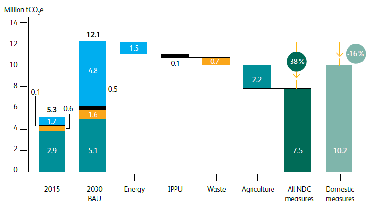
Rwanda’s adaptation contribution prioritises adaptation interventions, establish baselines, and develops sector-level performance indicators and targets. These build upon the GGCRS and associated sector working papers, climate change vulnerability assessments reports, as well as the Strategic Programs for Climate Resilience (SPCRs). In total, 24 adaptation interventions are proposed, classified according to 8 key sectors (Figure ES-1). A total of 38 adaptation indicators have been developed to be aligned with baselines and adaptation targets. Basing on the experiences in reporting at the global level (including expectations of adaptation investment funds) and national level (including projects), the indicators have the potential to position Rwanda’s envisaged robust engagement and efforts at addressing challenges of measurement of climate adaptation/resilience.
| Water | 1 | A national Water Security through water conservation practices, wetlands restoration, water storage and efficient water use |
|---|---|---|
| 2 | Water resource models, water quality testing, and hydro-related information | |
| 3 | Develop and implement a management plan for all Level 1 catchments | |
| Agriculture | 4 | Develop climate resilient crops and promote climate resilient livestock |
| 5 | Develop climate resilient post harvest and value addition facilities and technologies | |
| 6 | Strengthen crop management practices | |
| 7 | Develop sustainable land use management practices | |
| 8 | Expand irrigation and improve water management | |
| 9 | Expand crop and livestock insurance | |
| Land and Forestry | 10 | Development of Agroforestry and Sustainable Agriculture |
| 11 | Promote afforestation / reforestation of designated areas | |
| 12 | Improve Forest Management for degraded forest resources | |
| 13 | Integrated approach to planning and monitoring for sustainable land use mgt | |
| 14 | Harmonised and integrated spacial data management system for sustainable land use | |
| 15 | Inclusive land administration that regulate and provide guidance for land tenure security | |
| Human Settlement | 16 | High density buildings and informal settlement upgrading |
| 17 | Storm water management | |
| Health | 18 | Strengthen preventive measures and create capacity to adapt to disease outbreaks |
| Transport | 19 | Improved transport infrastructure and services | Mining | 20 | Climate compatible mining |
| Cross Sectional | 21 | Disaster risk monitoring |
| 22 | Establish an integrated earlywarning system, and disaster response plans | |
| 23 | Capacity building and development for cross-sector NDC implementation | |
| 24 | Access to Finance |
The NDC adaptation indicators will be embedded in the Environment and Natural Resources Management Results Based Monitoring and Evaluation framework (RBME) used to track and inform progress on NDC implementation towards the NST. This reporting framework is conducted biennially through Joint Sector Reviews (JSRs). In addition, reporting on NDC adaptation indicators will be carried out in the context of a High Level Policy Dialogue that tracks progress on the implementation of the GGCRS that circumscribes the broader context of NDC implementation.
The successful implementation of Rwanda’s NDC requires an effective Measuring, Reporting and Verification (MRV) framework, enabling the country to monitor the effectiveness of its mitigation and adaptation measures and facilitating its access to climate finance. Internationally, the implementation of an MRV system is the basis for understanding the current GHG emission levels, the ambition of the existing efforts, and the progress made in contributing towards the goals of the Paris Agreement.
Rwanda submitted its Third National Communication (TNC) in September 2018, reporting on its national GHG inventory up to the year 2015. The country is currently preparing its first Biennial Update Report (BUR) and an updated GHG inventory. The Paris Agreement contains several additional MRV requirements which, when taken together with the existing UNFCCC arrangements, provide an enhanced basis for Rwanda’s international reporting requirements. New requirements are mainly covered by Article 13, which establishes a new Enhanced Transparency Framework (ETF) through which Parties must regularly account for their NDCs alongside other reporting requirements similar to those contained in National Communications (NCs), BURs and the International Consultation and Analysis (ICA).
Rwanda has developed an MRV framework consistent with these requirements that will allow the government to effectively track progress of the mitigation activities identified in this NDC consistent with UNFCCC reporting standards, and carry out ongoing evaluation of whether the country is on course to meet its targets through 2030. This takes the form of a framework of indicators for each of the key emitting sectors, which can be used for international reporting as well as for domestic tracking of NDC implementation. The framework enables monitoring of the counterfactual BAU baseline emissions as well as actual emissions arising from implementation of NDC mitigation measures. It will also facilitate tracking of climate finance flows for NDC implementation and other forms of international support.
A monitoring, reporting and verification (MRV) framework has been developed for adaptation, including MRV on financing of adaptation measures. An approach has been proposed to organize the MRV framework in a way that facilitates reporting at selected levels. The levels have identified indicators that are relevant at global and national levels. The national level reporting will respond to data and information demands at strategic levels, sector strategic plans that inform joint sector reviews and other reporting requirements at the Prime Minister and Ministry of Finance and Economic planning (MINECOFIN) levels.
In order to fully implement the mitigation and adaptation measures contained in this NDC, Rwanda will require finance, capacity building and technology transfer. The total estimated cost for Rwanda’s identified NDC mitigation measures through 2030 is estimated at around 5.7 billion USD, and over 5.3 billion USD for adaptation priorities, representing a combined funding requirement of around 11 billion USD (Table ES-2). For both mitigation and adaptation combined, unconditional measures account for around 40% of the total estimated funding requirements, and conditional measures around 60%.
| USD million | Unconditional | Conditional | Grand Total |
|---|---|---|---|
| Mitigation measures | |||
| 2020-2025 | 1,057 | 1,754 | 2,811 |
| 2025-2030 | 953 | 1,912 | 2,866 |
| Mitigation Total | 2,010 | 3,667 | 5,677 |
| Adaptation measures | |||
| 2020-2025 | 916 | 1,374 | 2,290 |
| 2025-2030 | 1,229 | 1,844 | 3,073 |
| Adaptation Total | 2,145 | 3,218 | 5,364 |
| Combined Total | 4,155 | 6,885 | 11,041 |
The Government of Rwanda will continue to commit significant resources to climate change relevant strategies. Rwandan communities, private sector and NGOs can also contribute significantly to these climate change-related activities through public-private partnerships. The Rwanda Green Fund, FONERWA, will continue to play a vital role in financing low carbon projects and programmes and leveraging investment.
However, the full implementation of the strategic mitigation actions is conditional on the support of international stakeholders. The implementation of the prioritised policies and actions assume the continued use of existing and planned national and international financial sources.
Rwanda intends to meet its conditional contribution through the use of climate finance and international market mechanisms where appropriate, building upon the experience of the Clean Development Mechanism (CDM) and other existing market mechanisms. These include the potential involvement in international cooperative approaches under Article 6 of the Paris Agreement.
The consultations undertaken through the NDC revision process have created momentum for strengthening planning, implementation and monitoring and accountability frameworks. Thus, the updated NDC will continually guide successful mainstreaming of climate change into sector priorities building on existing country driven policy mechanisms and institutional arrangements, Technology transfer and capacity building, areas that are considered critical to fully implement Rwanda’s mitigation and adaptation contributions, as outlined further in this submission.
At the 21st Conference of the Parties (COP21) in Paris, on 12 December 2015, Parties to the United Nations Framework on Climate Change (UNFCCC) reached a landmark agreement to combat climate change and to accelerate and intensify the actions and investments needed for a sustainable low carbon future. The Paris Agreement (PA) entered into force in November 2016, following the universal adoption of the Agreement by Parties. Through the PA, developed and developing countries made individual commitments to transition toward a climate-resilient and low-emissions future.
Parties are required to undertake and communicate efforts to contribute to the achievement of these goals in the form of Nationally Determined Contributions (NDCs) communicated to the UNFCCC (Article 3). NDC’s are therefore the centrepiece of the Paris Agreement agreed through an international partnership that forms the foundation for the pathway towards a low-carbon and climate resilient development.
To ensure increasing levels of ambition to combat climate change, the PA requires that, at a minimum of every five years, Parties submit revised NDCs that represent a progression beyond the Party’s then current NDC (Article 4). The PA also establishes a new enhanced transparency framework (ETF) for action and support, providing the basis for Parties to moni or and report on their progress in implementing their NDCs (Article 13).
Parties have been requested to submit their updated and revised NDCs to the UNFCCC Secretariat in 2020. In this context, Rwanda’s is submitting this updated NDC ahead of the 26th Conference of the Parties (COP26) to be held in Glasgow in 2021. The contributions described in this submission build upon Rwanda’s existing first NDC, new policies and national plans, and reflect subsequent work supported by the World Bank NDC Support Facility in developing quantifiable mitigation and adaptation targets, and the prioritization of interventions to support these two areas. The updated NDC represents a more detailed and robust assessment of mitigation and adaptation measures in Rwanda informed by in-depth analysis, improved information and data, and an extensive stakeholder-driven consultation process.
This document describes Rwanda’s update of its first Nationally Determined Contribution (NDC) for mitigation and adaptation for the period 2020 to 2030. It is structured as follows:
An Annex to this document outlines a framework of indicators for tracking implementation of the mitigation and adaptation contributions.
This section provides a brief overview of Rwanda’s national circumstances, including the country’s geographic profile, its climate and climate change impacts, key socio-economic characteristics, natural resources and economic sectors.
Rwanda is a country located in the east of central Africa between 1°4´ and 2°51´south latitude, and 28°53´ and 30°53´ east longitude, and covers an area of 26,338 km2. It lies approximately at 120 km south of the equator, at 1,100 kms from the Indian Ocean, at 1,920 km from the Atlantic Ocean, at 3,750 km from the Mediterranean Sea, and at 3,980 km from South Africa Cape. It is bordered by Uganda at the North, Tanzania at the East, Burundi at the South and the Democratic Republic of Congo at the West (GoR, 2018a).
Rwanda’s administrative structure comprises 4 provinces (Eastern, Western, Northern and Southern Provinces) and City of Kigali, all subdivided into 30 districts, 416 sectors, 2,148 cells and 14,816 villages. The altitude varies between 900 m and 4,507 m from east to west where eastern plains lay between 1,000 m to 1,500 m and the central plateau region between 1,500 m and 2,000 m. The Congo-Nile Ridge and volcanic chains of Birunga have altitudes between 1,800 m and 4,507 m (the country’s highest point, on the top of the Kalisimbi volcano) while the regions around Kivu Lake and Bugarama plains are located at altitudes of between 900 m and 1800 m (Sirven et al, 1974; MINIRENA, 2010).
Rwanda has a tropical climate moderated by hilly topography stretching from east to west. The country is divided into four main climatic regions: the eastern plains, central plateau, highlands, and regions around Lake Kivu. The eastern plains receive an annual rainfall of between 700 mm and 1,100 mm, with mean annual temperature oscillating between 20°C and 22°C. The central plateau region enjoys rainfall of between 1,100 mm and 1,300 mm, with an annual mean temperature of between 18°C and 20°C.
The highlands, including the Congo-Nile Ridge and volcanic chains of Birunga, benefit from an annual rainfall of between 1,300 mm and 1,600 mm, with annual mean temperature ranging between 10°C and 18°C. Regions around Lake Kivu and Bugarama plains have an annual rainfall of between 1,200 mm and 1,500 mm, with an annual mean temperature between 18°C and 22°C (Ilunga et al., 2004; MINIRENA, 2010; Muhire and Ahmed, 2015; 2016).
As with many other countries, Rwanda is increasingly experiencing the impacts of climate change. Rainfall has become increasingly intense and the variability is predicted to increase by 5% to 10% (GoR, 2017b). Temperature increases have also been experienced, with records from 1971 to 2016 showing rises in mean temperature of between 1.4°C and 2. 56°C in the south- west and eastern regions of Rwanda (GoR, 2018a). Changes in temperature and precipitation and their distributions are the key drivers of climate and weather-related disasters that negatively affect Rwandans and the overall economy. The main risks/impacts that adversely affect the population include droughts, floods, landslides and storms. These are associated with As with many other countries, Rwanda is increasingly experiencing the impacts of climate change. Rainfall has become increasingly intense and the variability is predicted to increase by 5% to 10% (GoR, 2017b). Temperature increases have also been experienced, with records from 1971 to 2016 showing rises in mean temperature of between 1.4°C and 2. 56°C in the south- west and eastern regions of Rwanda (GoR, 2018a). Changes in temperature and precipitation and their distributions are the key drivers of climate and weather-related disasters that negatively affect Rwandans and the overall economy. The main risks/impacts that adversely affect the population include droughts, floods, landslides and storms. These are associated with damages to infrastructure, loss of lives and property including crops, soil erosion, water pollution, etc. (GoR, 2017b; REMA, 2015).
A rise in temperature is predicted across Rwanda in the coming years up to 2050, especially during the dry seasons. An additional seasonal increase of between 0.1 °C and 0.3 °C is projected on top of the annual mean temperature throughout the country, except for the northern region where a decrease of 0.06°C is expected. Furthermore, a decreasing trend in mean rainfall and number of rainy days is projected (GoR, 2018a).
This explains why increased dry spells are anticipated across the country, especially in the eastern region. Climate change will also upset the north-west highlands and south-western districts of Rwanda with a rise in rainfall intensities. According to the TNC, there is a high probability that the number of days with extreme temperature will continue to increase by 2050 whereas the days with extreme rainfall will be relatively constant (GoR, 2018a). Rwanda is highly reliant on rain-fed agriculture both for rural livelihoods and exports of tea and coffee, and depends on hydropower for half of its electricity generation. The country’s ongoing economic growth is therefore highly threatened by climate change.
Rwanda is highly vulnerable to climate change. The National Risk Atlas of Rwanda highlights that the country is highly prone to droughts, floods, landslides and windstorms (MIDIMAR, 2015). Other factors influencing the country’s climate change vulnerability include socio-economic drivers such as building in flood prone areas, high population density in prone areas, increased value of assets in flood-prone areas, and poor management of soil erosion.
Rwanda’s socio-economic development is dependent on the environment and natural resources such as land, water, air, minerals and biodiversity.
Total arable land is estimated at 14,000 km2 or 52% of the country’s total surface area (26,338 km2). However, in 2014 the total cultivated area increased to 1,747,559 hectares or 66% of the national territory. This means that some mountainous and protected areas have progressively been cultivated, exposing the country to more climate change and climate variability impacts (GoR, 2018a). Furthermore, farm ownership per household has decreased significantly, from 1.2 ha in 1984 to 0.89 ha in 1990 and 0.6 ha in 2010 (GoR, 2018a). These smaller plots are overexploited, leading to degradation and a decrease in soil fertility (GoR, 2018a).
Rwanda’s hydrographic system is split into two basins divided by the Congo-Nile ridge, with water systems to the west of the ridge flowing into the Congo basin, and those to the east of ridge flowing into the Nile basin. The country’s hydrologic network covers 8% of the national territory, equivalent to about 2,143 km2, on which 101 lakes cover around 1300 km2 (RNRA, 2015), 861 rivers occupy about 72.6 km2 while the water of 860 wetlands and valleys covers 770 km2 (Sirven et al, 1974; REMA, 2009; MINIRENA, 2012). The Congo basin drains around 33% of the national territory with around 10% of the country’s water. The Nile basin drains around 67% of the national territory, with 90% of country’s water (Sirven et al, 1974).
Rwanda’s territory is covered with diverse ecosystems which include natural ecosystems (mountain rainforests, gallery forests, savannah woodland, wetlands and aquatic forests),forested area and agro‐ ecosystems. Nationally protected areas are mainly represented by four national parks: (i) Volcanoes National Park which is famous worldwide due to the presence of mountain gorillas and a wide variety of plants and animal species, (ii) Nyungwe National Park which has more than 1,200 species of flora and 275 species of birds, (iii) Akagera National Park which covers 108,500 ha and has more than 900 species of plants and 90 mammals, and (iv) Gishwati-Mukura National Park covering an area of 4,520 ha. Unfortunately, Rwanda’s protected areas have lost around 50% of their original surface area over the last 40 years. There are also small reserve forests including Busaga, Buhanga, Sanza, Iwawa, Rubirizi, Makera, and a number of public and private plantation forests.
Rwanda’s wetlands comprise marshlands, lakes, rivers and streams and represent around 15% of the national territory (of which 6.3% are marshlands and 8.6% are lakes and streams). Total wetlands cover an area of 276,477 ha of which 74% is classified as conditionally exploited, 6% unconditionally exploited, and 20% fully protected. Wetlands are dominated by papyruses, especially in the Kamiranzovu, Gishoma and Rugezi marshlands and around lakes such as Muhazi, Burera and Ruhondo. Plantations forest are distributed throughout the country and dominated by exotic species such as Eucalyptus, Pinus, and Grevillea.
Rwanda has experienced a rapid socio-economic and demographic transformation since 2000. According to data from the National Institute of Statistics of Rwanda (NSIR), real gross domestic product (GDP) across the period 2007-2017 rose from RWF 3.26 trillion to RWF 6.69 trillion, or by an average of 7.45% per year (GoR, 2018b).
For the year 2015, the NSIR reports the working population (16 years and above) in Rwanda to be 6.4 million, with females representing 54% and males 46%. The majority (82%) live in rural areas and 18% live in urban areas. The total labour force participation rate was 87.4% and was lower in urban areas (79%) compared to rural areas (89%). This employment rate represents 85% of the working age population. The majority of Rwandan households are reliant on agriculture for food and income. The agricultural sector employs over 70% of the working population and is characterized by low productivity and low economic value (NISR, 2014).
According to the Fifth Integrated Household Living Survey (EICV5), Rwanda’s population grew from 8.13 million in 2002 to 11.23 million in 2015 (GoR, 2018b). Around 77% of the population lives in rural areas, and 23% in urban areas (of which the capital Kigali is by far the largest). The EICV5 foresees significant population growth under its central ‘medium growth’ scenario reaching 14.16 million by 2025 and 15.71 million by 2030 (Table 2.1).
Table 2.1 Urban and rural population forecasts to 2030
| Population (millions) | 2015 | 2020 | 2025 | 2030 |
|---|---|---|---|---|
| Urban | 2.63 | 3.05 | 3.54 | 4.10 |
| Rural | 8.59 | 9.61 | 10.62 | 11.61 |
| Total | 11.23 | 12.66 | 14.16 | 15.71 |
Source: Adapted from GoR, 2018b and GoR, 2015b
Rwanda’s policies for addressing poverty, and the goals for poverty reduction, are set out in the First National Strategy for Transformation (NST1), the Vision 2020 and Vision 2050 strategies (GoR, 2018b). These commit the government to reduce poverty from 44.9% in 2011 to 20% by 2020. The results of the EICV5 survey show that 38.2% of the population was poor in 2016/17, as compared to 39.1% in 2013/14 and 44.9% in 2010/11. Since 2010/11, extreme poverty fell from 24.1% to 16.0%. There are substantial geographical differences in the poverty rates, with lower rates in urban areas than elsewhere (GoR, 2018b).
Agriculture is an important sector of the Rwandan economy, contributing 33% to national GDP in 2015 (GoR, 2018a) with almost 90% of households practice traditional subsistence agriculture, mainly on narrow plots of land exhausted by continuous utilization (ibid).
National crop production comprises tubers and roots (37%) such as cassava, followed by banana (28%) and cereals (11%), legumes and pulses (8%), and vegetables and fruits (5%). Coffee and tea constitute Rwanda’s main export crops. The use of chemical fertilizers has increased from 29% to 37% between 2010/11 and 2013/14 and remains higher than expenditure on organic fertilizers. The country has committed to reducing the population working in the agriculture sector by increasing productivity per hectare and promoting the recycling of organic waste and use of manure to improve soil fertility.
The largest livestock population is concentrated in the eastern and southern parts of the country with goats, cattle and chickens being the most commonly owned types (GoR, 2018a). Cattle predominate on the larger farms in the east and central regions while in the southern parts where farms are often as small as 0.5 ha, few households own cattle. In these areas, the government is promoting the One-Cow-per-Poor-Family, or Grinka, program.
Fish production has increased significantly since 2011 (for example, rising from 11.662 tons in 2011 to 24,550 tons in 2013; GOR, 2018a).
Rwanda is turning around a legacy of deforestation in keeping with its 2020 goal to increase forest cover to 30% of national land area (MINIRENA, 2015). Natural forests, which cover 10.8 % of the country, comprise forested belts in National Parks, forest reserves, natural and gallery forests and other remnant forests. Forest plantations of exotic tree species (mostly eucalyptus and pine), woodlots and agro-forestry plantations cover 18.4 % and represent nearly 63% of the country’s total forest cover. Plantation forests supply almost all fuelwood, with charcoal accounting for about 15.2 % of households’ primary energy sources. Rwanda is actively promoting agro-forestry to provide wood for fuel during the transition to available and affordable electricity for all. Agro-forestry also helps combat soil erosion, provides fodder, improves soil fertility and contributes to social well-being and green economic growth (GoR, 2018a).
The services and tourism sector is a major driver of economic growth in Rwanda, contributing 47% to national GDP in 2015 (GoR, 2018a). Key growing service areas include banking, insurance, and transport. Services exports grew by 10% per annum between 2009 and 2014. The travel sector (including tourism) has steadily increased its share of total services exports in recent years. In 2014, 76% of services receipts were generated in the travel and tourism sector, contributing USD 303 million in export revenue, up from USD 174 million in 2009 (GoR, 2018a). Freight and other transportation services are also important contributors. The number of visitors to Rwanda has increased over recent years, driven largely by tourist visits to the country’s national parks. In 2015 national parks counted 72,790 visitors, of which 44% visited the Volcano national park and 44% visited the Akagera national park (GoR, 2018a).
Rwanda’s industry sector mainly comprises construction, manufacturing, mining and quarrying. In 2011, the Ministry of Trade and Industry (MINICOM) developed a national export strategy aiming to transform Rwanda into a globally competitive export economy. The industry sector has since grown to contribute 14% to national GDP (GoR, 2018a).
In the fourth quarter of 2017, Rwanda’s total trade amounted to USD 959.48 million, an increase of 19.8% over the fourth quarter of 2016. Exports totalled USD 157.53 million, imports totalled USD 724.15 million and re-exports were valued at USD 77.70 million (NISR, 2017). The deficit in the balance of formal trade in goods was USD 136.17 million in January 2018, a decrease of 24% compared to the previous month of December 2017. Year-over-year, the formal trade in goods deficit increased by 1.45% on the deficit of January 2017 (NISR, 2018). National exports are dominated on a volume basis by re-export products (including petroleum products, machines, vehicles and engines), tea and coffee. On a value basis, national exports are dominated by minerals including gold, cassiterite, coltan, and wolfram.
Rwanda energy primary use is dominated by biomass, which accounts for around 86% of the total (GoR, 2018a). Over 80% of Rwandan households use wood for their cooking fuel, followed by charcoal, crop waste, gas or biogas. Households are also the dominant consumers of electricity (51%), the bulk of which demand is primarily used for lighting. The industrial sector (42%) is the second largest consumer of energy, which mainly comes from motor-drivers and lighting. Public sector consumption of electricity (6%) is mainly used for public buildings, street lighting and water pumping. The average household uses around 1.8 tons of firewood each year to meet its cooking needs with a traditional stove (GoR, 2018a). Reliance on traditional energy represents a major challenge, and increasing the use of sustainable biomass and charcoal is a key priority for Rwanda’s energy policy.
Rwanda has one of the lowest electricity consumptions per capita in the region, and generation capacity is low. According to the Rwanda Energy Group Ltd (REG), national electricity generating capacity is currently around 150 MW of which hydropower accounts for around one third (50 MW) and fossil based units the remaining two thirds (99 MW), mainly from oil-fired generation and recently added peat-fired capacity. Several small solar PV and biomass installations account for around 2 MW (REG, 2019). Increasing investment in generating capacity and improving access to electricity represent important energy policy aims, and recent years have seen major improvements. For example, during the period between 2012 and 2015, electricity generation increased by 72% and access to electricity improved from around 5% to 36% although lower than the 50% targeted in 2016 (GoR, 2018a). Rwanda is also undertaking various energy efficiency programs including the distribution of compact fluorescent lights (CFL), the SolaRwanda’ Solar Water Heaters (SWH) project, and the replacement of high-pressure sodium lamps with LEDs in street lights.
Rwanda’s transport sector is dominated by land transport due to the improved national and districts road network and increased investment in public transport. Transport is mainly undertaken by road with a current classified road network consisting of national roads (2,749 km), district roads class 1 (3,906 km) district roads class 2 (9,706 km) and other unclassified roads. With increasing demand for travel, the number of vehicles has increased dramatically over the past decade. Based on number of registrations, total vehicle numbers are estimated to have grown from 47,631 in 2006 to 161,925 in 2015, representing an increase of over 300%.1 Motorcycles accounted for around 51% of total vehicles in 2015, followed by passenger cars (34%), and other vehicles including buses and trucks (15%).
To reduce the number of accidents on Rwanda’s roads, motor vehicle inspection centres has been created. To reduce atmospheric pollution levels from the transport sector, the government has also committed to reducing the number of imported used cars by increasing taxes and plans the introduction of electric vehicles from 2020 onwards as part of its ‘e-mobility’ program. Other key transport strategies include bus promotion as part of public transport development, replacement of minibuses by modern buses and the promotion of mass rapid transportation.
Although heath facilities in Rwanda (public and private) have increased in number since 2009, the country faces challenges to improving the country’s health and reducing levels of disease. May such diseases have a close linkage with climate change, such as malaria, which is a vector borne disease, tuberculosis which is affected by environmental pollution and malnutrition which may indicate the persistence of food insecurity among population. Morbidity data indicate that acute respiratory infections are the leading causes of death in the country, followed by malaria and intestinal parasites (GoR, 2018a). According to the UNDP, life expectancy in Rwanda was 68.7 years in 2018, compared to 55.3 years in 2005 (UNDP, 2019).
Rwanda is experiencing a rapid urbanization process associated with rapid population growth in its towns and cities. This increase is resulting in huge waste generation and high demand in public services including solid waste management services. For instance in City of Kigali, levels of waste entering landfill sites increased from 141.38 tons per year in 2006 to 495.76 tons per year in 2015. A standard “collect and dump” approach is the dominant waste management in most Rwandan cities.
Increased involvement of the private sector increased the coverage of solid waste collection service; for example, 90% of the population in Kigali had access to solid waste collection service in 2015 compared to 44% in 2012. The same improvement is also being seen in other urban areas. Generation of electric power from landfill gas (LFG) collection at landfill site presents an opportunity to utilise waste methane and help meet growing energy demand.
The main wastewater treatment and disposal systems in Kigali and secondary cities are dominated by septic tanks, soakaways and direct discharge in natural wetlands. In general, there are no centralized wastewater treatment systems although the main hotels, hospitals, new real estates, major governmental buildings and some industries have installed their own treatment systems.
There are several plans to develop wastewater treatment (WWT) systems over the coming years, including a Kigali central WWT project in Nyarugenge and a centralized sewerage system for Kibagabaga and Kinyinya catchments in the Gasabo District. The government also plans to increase waste recycling initiatives, including through the use of aerobic biological treatment (composting).
The Government of Rwanda (GoR) is committed to taking urgent action to mitigate and adapt to the effects of climate change. As a Party to the UNFCCC, the country seeks to contribute to the ambitious goal of limiting temperature rise to 2oC with efforts to reach 1.5oC agreed under the Paris Agreement (UNFCCC, 2015).
Rwanda ratified the United Nation Framework Convention on Climate Change (UNFCCC) in 1995, the Kyoto Protocol in 2004, and the Paris Agreement in 2016. Rwanda submitted its National Adaptation Programmes of Actions (NAPA)in 2006. In line with the Paris Agreement, Rwanda submitted its Intended Nationally Determined Contribution (INDC) in 2015 which became its first NDC in 2016. Rwanda submitted its first National Communication to the UNFCCC in 2005, its second in 2012, and its third in 2018.
Though Rwanda is among the countries with lowest emission per capita worldwide (GoR, 2011), it is highly vulnerable to climate change. Therefore, adaptation to climate change is a key concern and a priority for the country. As it is true of most African nations, Rwanda’s contribution to climate change in the form of greenhouse gas (GHG) emissions is relatively small, although emissions from deforestation, agriculture, and land use, combined with strong expected emission growth from expected economic development and energy use, and are significant enough within Rwanda’s carbon footprint to demand a mitigation response.
Reflecting these aims, in 2011 the country adopted the Green Growth and Climate Resilience Strategy (GGCRS) setting out the country’s actions and priorities on climate change relating to both mitigation and adaptation and how these will be mainstreamed within economic planning (GoR, 2011). The strategy provides a vision for how Rwanda can tackle climate change through becoming a climate resilient and low carbon economy, and projects actions to be undertaken to inform Rwanda’s strategy for economic development, Vision 2050. The strategy contains 14 Programmes of Action (PoA), as summarised in Table 3.1 below.
The actions set out in the GGCRS provide the basis for the development of the NDC and the country’s commitment towards the implementation of the Paris agreement with mitigation and adaptations actions, as well as other key national guiding documents including Vision 2050, the National Strategy for Transformation (NST1), sectoral policies, Sector Strategic Plans, the Strategic Programme for Climate Resilience (SPCR), and Sustainable Energy for All (2015-2030).
Rwanda has also been an active member of regional and global initiatives to respond to the threat of climate change. These include participation in the East African Community (EAC) Climate Change Policy (2010) and subsequent East African Community (EAC) Climate Change Master Plan 2011–2031 . Rwanda also joined the NDC Partnership and launched its NDC Partnership Plan during the Africa Green Growth Forum held in Kigali in November 2018. In addition, after conducting an assessment of economic impact of climate change in 2009, the GoR decided to establish a department of climate change within REMA to advise the government on all climate change related issues in the country.
Table 3.1 Rwanda’s Green growth and Climate Resilience Strategy
| PoA | Area |
|---|---|
| 1 | Sustainable intensification of small scale farming |
| 2 | Agricultural diversity for local and export markets |
| 3 | Integrated Water Resource Management and Planning |
| 4 | Sustainable Land Use Management and Planning |
| 5 | Low carbon mix of power generation for national grid |
| 6 | Sustainable small-scale energy installations in rural areas |
| 7 | Green industry and private sector investment |
| 8 | Climate compatible mining |
| 9 | Efficient resilient transport systems |
| 10 | Low carbon urban settlements |
| 11 | Ecotourism, Conservation and PES Promotion |
| 12 | Sustainable forestry, agro-forestry and biomass energy |
| 13 | Disaster Management and Disease Prevention |
| 14 | Climate data and projections |
Source: GoR, 2011
The Rwanda Green Fund (FONERWA) was established in 2012 and invests in sustainable wealth creation and poverty reduction by providing strategic financing that accelerates Rwanda’s commitment to building a strong climate resilient and green economy.
In addition, the GoR revised its environment law in 2018 to include a number of articles that are relevant to climate change mitigation and adaptation. It covers a wide variety of articles on environment and climate change such as mainstreaming the environment and climate change into planning process, reporting, education on the conservation, and response measures on climate change and technology transfer.
Most recently, the National Environment and Climate Change Policy was enacted in 2019 with the goal of achieving a climate resilient nation with a clean and heathy environment (MoE, 2019). The policy’s objectives include (MoE, 2019):
Rwanda submitted its Intended Nationally Determined Contribution (INDC) to the UNFCCC in September 2015, setting out its adaptation and mitigation goals. With the entry into force of the Paris Agreement in November 2016, the INDC became Rwanda’s first Nationally Determined Contribution (NDC). The first NDC is built upon the Green Growth and Climate Resilience Strategy (GGCRS), as well as other key national policies and guiding documents.
This updated NDC updates and strengthens the first NDC for both the mitigation and adaptation contributions, informed by improved data collection, in-depth technical analysis and extensive stakeholder engagement. In the case of mitigation, detailed sector- and project-based modelling has been undertaken to now estimate the country’s mitigation potential and develop quantified conditional and unconditional contributions through 2030. This section provides a brief description of the revision process of Rwanda’s nationally determined contribution for both the mitigation and adaptation components.
The mitigation contributions presented in this updated NDC are based on achieving a relative GHG emissions reduction through 2015-2030 against a counterfactual baseline emissions projection representing the national emissions pathway in the absence of the mitigation measures. This requires developing sectoral BAU forecasts of output/activity and associated emissions through the NDC period; the subsequent tracking of progress against this baseline through implementation of mitigation projects will require the ongoing updating of the baseline.
Rwanda’s Third National Communication (TNC) to the UNFCCC (GoR, 2018a) provide long-term emissions projections for Rwanda through 2050 using the Long-range Energy Alternatives Planning System (LEAP) software system (SEI, 2009) and calculations applying IPCC Tier 1 national emissions modelling. The BAU projections used in this updated NDC build upon and strengthen this analysis in several ways:
Rwanda’s first NDC identified seven broad programmes of action, covering a number of interventions within each of the country’s key emitting sectors. However, these were only partially assessed for their GHG mitigation potential.
The analysis used to develop this updated NDC has involved identifying a range of mitigation options from within each of the NDC sectors for further consideration and quantitative analysis. A bottom-up ‘long-list’ was developed through close consultation with various stakeholders and experts, based on Rwanda’s NDC (GoR, 2015a); an assessment of NAMAs in Rwanda (GoR, 2015b); an “adjusted” list of NDC options, as contained in the Rwanda NDC Implementation Plan (GoR, 2017b); and Rwanda’s TNC to the UNFCCC (GoR, 2018a).
A workshop was held in June 2019 in order to identify and discuss the ‘long-list’ according to sector-based discussion groups.3 Guided discussions focused on three elements:
A modified ‘long list’ emerging from the workshop discussions was further refined, based on subsequent meetings held between the consulting team, government officials and sector experts though July 2019 - January 2020. The projects identified in the NDC were re-assessed, as well as additional projects and programmes. In some cases, the details, and context, regarding many of the projects were found to have changed since the time of INDC submission. The ‘long list’ of options identified thereby reflects a set of real projects and programmes under consideration, or having been studied, from within government departments and agencies.4 The identified measures provided the basis for the GHG emissions modelling described in the following section.
The adaptation inputs depicted in this updated NDC are based on producing quantified targets for adaptation/resilience, evaluate priority interventions, develop monitoring and evaluation (M&E) framework for adaptation interventions. This was conducted through the evaluation of updated NDC adaptation long list of interventions based on updated information and an indepth assessment of the country’s vulnerability to climate change. The following points outline the key steps that were followed in this revision process for identifying and assessing adaptation measures:
Rwanda’s mitigation contribution takes the form of a reduction in GHG emissions relative to a business-as-usual (BAU) emissions baseline over the period 2015-2030. The contribution comprises of two components:
The combined unconditional and conditional contribution is therefore a 38 per cent reduction in GHG emissions compared to BAU in 2030; this is equivalent to an estimated mitigation level of up to 4.6 million tCO2e in 2030.
The sectoral scope of the contribution covers all emissions sources described in the IPCC 2006 Reporting Guidelines, including emissions from the categories of energy; industrial processes and product use (IPPU); waste; and agriculture, forestry and other land use (AFOLU) but excluding sources from forestry and other land use. These sources may be included within future contributions, subject to improved data availability and ongoing development in the accuracy of their quantification within the national GHG inventory. Note also that due to the lack of an intentionally recognised GHG accounting methodology, emissions reductions arising from utilisation of methane from Lake Kivu for electricity generation have not been quantified or included within this contribution. This may be revised in future contributions subsequent to development of suitable accounting and reporting guidance, and the development of relevant project data.
The coverage of the contribution includes the three main greenhouse gases carbon dioxide (CO2), methane (CH4), nitrous oxide (N2O), and also hydrofluorocarbons (HFCs).
This section describes Rwanda’s nationally determined contribution to mitigation. It describes the emissions sources covered by the contribution according to the latest national GHG inventory year, the development of BAU emissions projections by sector to 2030, the expected contribution from mitigation measures according to each sector, and the associated funding requirements expected for both the unconditional and conditional components.
Rwanda’s latest GHG inventory data is reported in its Third National Communication (TNC) to the UNFCCC (GoR, 2018a) covers emissions up to the year 2015. This is the year adopted as the NDC baseline year. As part of the NDC revision process, a review of the GHG inventory data was undertaken. This resulted in the correction of some errors and inconsistencies. In addition, more recently available information and survey data allowed for actual activity and energy consumption data to replace previously estimated values. The historic and base year data described below are therefore based on this revised dataset which is considered the most recent and accurate information available against which to assess NDC mitigation contributions. These will be reflected in Rwanda’s forthcoming Biennial Update Report (BUR) and in the next National Communication.
GHG inventory data in the base year 2015 are shown in Table 5.1 according to IPCC reporting categories for all GHG emissions sources, and summarised in aggregated form in Figure 5.1. Total emissions excluding forestry are estimated at 5.33 million tCO2e for 2015. The agriculture sector accounted for the largest share of the total (2.94 million tCO2e, 55% of total), followed by energy (1.68 million tCO2e, 31% of total) and waste (0.64 million tCO2e, 12% of total). Emissions from IPPU represented just 0.08 million tCO2e, equivalent to around 2% of total emissions in 2015; mainly associated with calcination CO2 emissions from clinker production.
Emissions from livestock, predominantly CH4 from enteric fermentation in cattle, represented the largest emissions source category in the base year, followed by N2O emissions from managed soils in crop production. Following these agricultural sources, major sources included CO2 emissions from fuel combustion for heating and cooking in buildings (LPG, kerosene), which accounted for 14% of the total, and CO2 emissions from liquid fuel use in road transport (diesel, gasoline), which accounted for 13% of the total.
Figure 5.1 Rwanda’s GHG emissions by source in 2015, MtCO2e
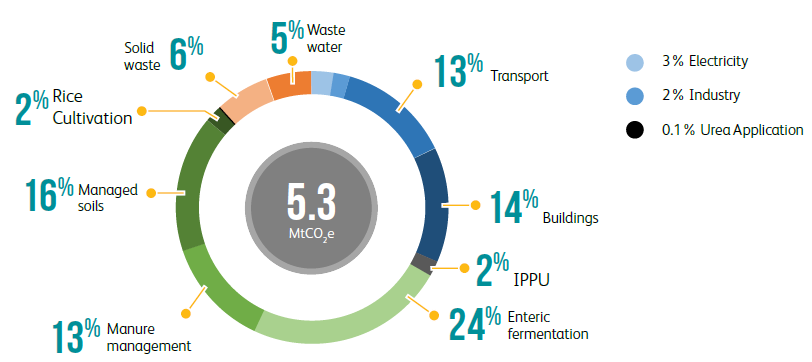
Source: Rwanda National GHG Inventory data (as of September 2019); forestry excluded.
Table 5.1 Rwanda’s GHG emissions by source in 2015, MtCO2e
| IPCC Reporting Categories | GgCO2e | MtCO2e | |||
|---|---|---|---|---|---|
| 1. Energy | 1.A. Fuel Combustion Activities | 1.A.1.Energy Industries | 1.A.1.a.Electricity and Heat Production | 159 | 0.16 |
| 1.A.2.Manufacturing Industries and Construction | 91 | 0.09 | |||
| 1.A.3.Transport | 1.A.3.b.Road Transport | 686 | 0.69 | ||
| 1.A.4.Other Sectors | 1.A.4.a.Commercial/Institutional | 102 | 0.10 | ||
| 1.A.4.b.Residential | 639 | 0.64 | |||
| 2. IPPU | 2.A. Mineral Industry | 69 | 0.07 | 2.C. Metal Industry | 2 | 0.002 |
| 2.D. Non-Energy Products from Fuels and Solvent Use | 4 | 0.004 | |||
| 2.F. Product Uses as Substitutes for Ozone Depleting Substances | 7 | 0.01 | |||
| 3. AFOLU | 3.A. Livestock | 3.A.1.Enteric Fermentation | 1,284 | 1.28 | |
| 3.A.2.Manure Management | 673 | 0.67 | |||
| 3.B. Land | 3.B.1.Forest Land | - | - | ||
| 3.C. Aggregate Sources and Non-CO2 Emissions Sources on Land | 3.C.3.Urea application | 6 | 0.01 | ||
| 3.C.4.Direct N2O Emissions from managed soils | 540 | 0.54 | |||
| 3.C.5.Indirect N2O Emissions from managed soils | 191 | 0.19 | |||
| 3.C.6.Indirect N2O Emissions from manure management | 148 | 0.15 | |||
| 3.C.7.Rice cultivation | 98 | 0.10 | |||
| 4. Waste | 4.A. Solid Waste Disposal | 187 | 0.19 | ||
| 4.B. Biological Treatment of Solid Waste | 159 | 0.16 | |||
| 4.C. Incineration and Open Burning of Waste | 1 | 0.001 | |||
| 4.D. Wastewater Treatment and Discharge | 290 | 0.29 | |||
| Total emissions Energy | 1,677 | 1.68 | |||
| Total emissions IPPU | 82 | 0.08 | |||
| Total emissions AFOLU | 2,940 | 2.94 | |||
| Total emissions Waste | 637 | 0.64 | |||
| TOTAL emissions (excluding forestry) | 5,337 | 5.33 | |||
Source: Rwanda National GHG Inventory data (as of September 2019); forestry excluded.
Rwanda’s NDC mitigation targets are based on an in-depth assessment of the country’s mitigation potential against a BAU baseline through 2030. This has been undertaken through a process that integrates an analysis of Rwanda’s existing sectoral and climate policy framework, the generation of qualitative information through consultation with government officials, experts and stakeholders, quantitative modelling of mitigation options and scenarios, and multicriteria assessment to prioritise measures and determine conditional and unconditional contributions.
As described above, the mitigation assessment builds on the work undertaken in support of Rwanda’s INDC submission in 2015 and other more recent studies including e.g. GHG mitigation estimates made in the context of NAMAs and the TNC (GoR, 2018a), and a variety of other official data and information sources. The analysis comprised of three main stages:
The interaction between these three elements is shown below in Figure 5.2.
Figure 5.2 Overview of approach to analysis of mitigation potential
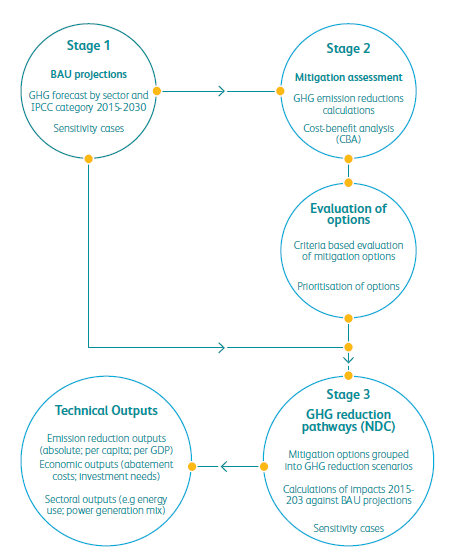
Rwanda’s mitigation contribution is based on a reduction relative to business as usual (BAU) emissions 2015-2030. The BAU projection represents the scenario according to which mitigation policies and actions are not implemented. It therefore provides the reference case (or baseline) against which the emissions reduction potential from mitigation actions have been quantified.
The development of BAU projections was based on detailed bottom-up modelling of activity and GHG forecasts developed for each emitting sector through 2030. These reflect a number of assumptions determining changes in inter alia energy supply and demand, sector output, technology uptake, and policy choices. In so doing, existing government projections and plans were assessed, during cross-departmental consultations between relevant ministries, agencies and organisations. Note that as work is currently ongoing to better quantify national emissions and removals from forestry, these were excluded from the analysis.
The modelling draws heavily upon, and updates, the emissions projections work undertaken as part of the TNC work (GoR, 2018a). These provide long-term emissions projections for Rwanda through 2050 using the Long-range Energy Alternatives Planning System (LEAP) software system developed by the Stockholm Environment Institute (SEI, 2009) and supplemented by various excel-based calculations. As described above, the BAU modelling develops and improves in the TNC projections in several ways, including through the use of more recent data and sectoral analysis.
Changes in production, energy use and GHG emissions through 2030 will be driven by a number of factors. The two most important drivers in the specific context of Rwanda’s NDC sectors are considered to be:
An aggregated economy-wide forecast of BAU emissions through 2030 in shown below in Figure 5.3. This represents the BAU baseline projection, consistent with the Vision 2050 outlook, against which Rwanda’s mitigation contribution has been quantified.
At an aggregate level, total emissions are forecast to more than double over the 2015-2030 period, rising from 5.3 million tCO2e in the base year to 12.1 million tCO2e in 2030. The graph shows that this represents an increased rate of growth compared to that seen during the period 2006-2015, closely reflecting the assumptions around economic and population growth and official planning, instead of projections based on past trends.7 The current projection compares with the TNC projection of around 10.2 million tCO2e in 2030, representing a doubling from the base year.8
The most rapid growth is forecast within industrial processes and energy use: the former expands its share of total emissions from 2% to around 4%, and the latter from 31% to 40% by 2030. The share of emissions from waste generation remains at around 12-13%, whilst agricultural sources decline from 55% to 43%. Although these do not represent dramatic shifts in emissions sources, they clearly indicate the growing contribution from fossil fuels to national emissions, arising from increasing demand for power generation, road transport services and other modern energy uses. At the same time, despite potential for increased productivity, agricultural output is expected to be limited due to land availability, thereby limiting emissions growth from this sector.
Figure 5.3 BAU GHG emissions projection, all NDC sectors
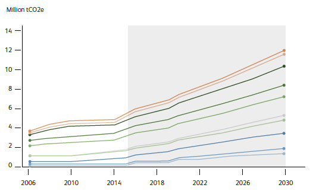
A detailed assessment of GHG mitigation options for Rwanda was undertaken in order to determine which options are most suitable within the NDC. The analysis was undertaken according to a three-step process:
Figure 5.4 summarises the estimated emissions reduction potential in 2030 for all mitigation measures assessed from the ‘long list’ of all mitigation measures.
The pie charts indicate the relative contribution made from projects within the key sectors of energy (covering energy use in electricity generation, industry, transport, commercial and residential, and agriculture), waste, IPPU and agriculture against the BAU baseline described above. The total mitigation potential is estimated at around 4.6 million tCO2e in 2030 compared to BAU emissions in the same year of 12.1 million tCO2e. According to the analysis, mitigation measures identified within the agriculture sector accounts for 49% of the total potential, followed by energy (34% of total), waste (14%), and IPPU (3%).
Within agriculture, soil conservation measures – which include terracing, conservation tillage, multi-cropping and crop rotation practices – account for around half of the sector’s mitigation potential. The bulk of the remaining mitigation potential includes measures to reduce enteric fermentation emissions from livestock, including the introduction of new species to replace local herds and improved husbandry, and the use of windrow composting.
Within energy use, increased use of renewables to meet increasing energy demand dominates the mitigation potential. Significant emissions reduction potential exists across each of the main sub-sectors. Hydropower, covering large- and small-scale new generation, represents the largest share of the identified GHG reduction potential, followed by the use of solar energy for water heating, pumping for agricultural irrigation and off-grid electricity which together account for around a quarter of all mitigation. Emissions reductions arising from use of electric vehicles and vehicle fuel economy standards are also considered to be potentially significant, although assumptions around the rate of implementation over the coming decade (e.g. new vehicles entering the fleet and development of charging infrastructure) and the rate of electricity grid decarbonisation achieved are key to the net level of abatement achieved.
Within waste, the most significant potential is identified within energy utilisation measures such as landfill gas recovery and direct waste-to-energy (WtE) plants. Mitigation potential from IPPU sources is by comparison relatively limited, with the majority of emissions reductions arising from increased use of clinker substitute for cement production (volcanic pozzolanas), followed by reduction of fluorinated gases (F-gases), in line with the 2016 Kigali amendment of the Montreal Protocol on Substances that Deplete the Ozone Layer (UN, 1987).
Figure 5.4 Estimated GHG mitigation potential in 2030 from all mitigation measures


The identified mitigation options were assessed according to a multi-criteria evaluation framework. This was undertaken partly to assess the suitability of the identified measures within the NDC, and also to help inform the decision of which could be considered unconditional (domestically supported) measures, and which could be instead considered as conditional on international support.
A detailed economic assessment was made for the full list of options. Although economic efficiency is a key criterion, climate policy must also respond to other key issues such as e.g. local pollution reduction, energy security, energy access, poverty, and seeking reduced electricity tariffs. A broader evaluation framework is therefore needed. Suitable mitigation options seek to maximise the following key criteria:
A set of criteria was chosen according to these three broad categories, drawing from international literature and guidance on good practice climate policy development (IPCC, 2007).
On the balance of the criteria evaluation framework, and informed by stakeholder and crossdepartmental consultation, the majority of the assessed options were considered to be ‘high priority’ or ‘medium priority’ options; no options are considered inappropriate as part of Rwanda’s mitigation contribution. All measures were also considered to be potentially applicable for implementation before 2030, subject to financial support and overcoming implementation challenges.
In common with many other developing country Parties, Rwanda mitigation contribution has been developed according to two different components:
The multi-criteria evaluation process provided a basis to clarify the identified options according to these two groupings. In so doing, the following broad considerations were also used to help guide the choices:
The subsequent classification of the mitigation measures according to unconditional and conditional measures is shown in the NDC Implementation Plan presented further below.
Figure 5.5 illustrates the emission projections for the BAU baseline, and Rwanda’s mitigation contribution for domestic unconditional projects and for all projects (unconditional and conditional). The associated values are shown in the table below. The graph shows emissions more than doubling under the BAU projection from 5.3 MtCO2e in the base year to around 12.1 MtCO2e in 2030. With the domestically supported unconditional mitigation measures, 2030 emissions are forecast to instead rise to around 10.2 MtCO2e, representing a reduction against BAU of around 16%. With both domestic and conditional mitigation measures, emissions are forecast to instead total around 7.5 MtCO2e, equal to a reduction of 38% by 2030 against the same baseline.
Figure 5.5 Mitigation contributions against BAU baseline

| Scenario | 2015 | 2020 | 2025 | 2030 |
|---|---|---|---|---|
| Total emissions (MtCO2e) | ||||
| BAU reference case (Vision2050) | 5.33 | 7.42 | 9.61 | 12.06 |
| Domestic NDC measures | 5.33 | 7.27 | 8.26 | 10.16 |
| All NDC measures | 5.33 | 6.59 | 6.64 | 7.50 |
| GHG reduction relative to BAU | ||||
| Domestic NDC measures | - | 2% | 14% | 16% |
| All NDC measures | - | 11% | 31% | 38% |
The mitigation contributions are summarised in Figure 5.6 below for the year 2030, which also shows the contribution of each sector to the total estimated mitigation potential.
Figure 5.6 Mitigation contributions in 2030
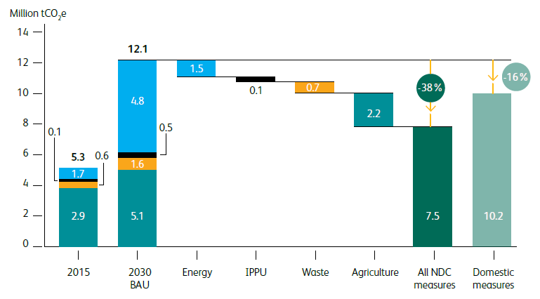
The following tables present a high-level summary for each of the mitigation measures quantified as part of the unconditional and conditional contributions, shown by sector and summarised by each of the key implementation aspects including responsible government ministries and implementing lead agencies, the planned timeline, and estimated funding requirements. Adaptation benefits and linkages with the United Nations (UN) Sustainable Development Goals (SDGs) are also shown.
Table 5.3 Mitigation measures: ENERGY| Measures | Timeline | Line ministry (implementing entities) | Funding estimates 2015-2030 | Adaptation benefits | Alignment with SDGs | ||
|---|---|---|---|---|---|---|---|
| 2015- 2020 | 2020- 2025 | 2025- 2030 | |||||
| Unconditional measures | |||||||
| Electricity generation | |||||||
Grid-connected hydropower generation Development of 56.75 MW large hydro capacity (capacity > 5 MW), 24.5 MW small and mini hydro projects (capacity <5MW) and 75 MW regional projects by 2030. Displacement of GHG emissions from fossil fuel power generation (peat, diesel oil). |
✔ | ✔ | MININFRA (REG, EDCL) | Total plant capital costs estimated at 328 million USD. | Potential for improved water management through flood and drought control. Increase in agricultural production due to improved water management and reduced exposure to extreme climate events. |  |
|
| Solar street lighting
Installation of solar lighting and LED systems to replace high-pressure sodium (HPS) lamps for street lighting and public spaces within populated areas and main roads by 2024. Reduction of grid-based GHG emisisons. |
✔ | ✔ | MININFRA, MINICOM (REG, EDCL) | Total lighting, battery and installation costs estimated at 28 million USD. | Reduced reliance on grid-based power generation and infrastructure, and imported energy. | 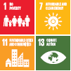 | |
| Manufacturing industry | |||||||
| Energy efficiency in agro-processing
A range of energy efficiency measures focused on reducing firewood and electricity consumption in the coffee and tea sector. |
✔ | ✔ | MINICOM (NIRDA, NAEB) | 2 million USD | Increased resilience of tea and coffee plantations. Reduced pressure on forests resources, with reduced impacts from extreme rainfall events. | ||
| Climate compatible mining
Phasing out of diesel gensets for on-site electricity consumption, to be replaced with grid and/or on-site renewable power production |
MOE (RMB, mining companies) | Up to 5 million USD. | Reduced reliance on energy imports through use of indigenous energy resources. |  |
|||
| Efficient brick kilns
Phasing out use of clamp kilns, and applying energy efficiency measures in the brick manufacturing industry. |
MININFRA (RHA, REMA, RFA, brick companies) | 13 million USD | Increased resilience of brick manufacturing industry. Reduced reliance on biomass energy and related air pollution. Reduced pressure on forests. | ||||
| Energy efficient cement production
Use of waste heat recovery (WHR) and increased use of rice husks as fuel within clinker production. |
✔ | ✔ | MINICOM, MOE (REMA, CCL) | 11 million USD | Increased resilience of cement industry. Reduced reliance on imported energy supply. | ||
| Transport | |||||||
| Vehicle emissions standards
Measures introduced to increase vehicle emissions performance of national vehicle fleet, including tax incentives and scrappage of older vehicles, and inspection. Reduction of GHG and local emissions from gasoline and diesel use. |
✔ | ✔ | MININFRA, MINICOM (RTDA, REMA) | Incremental vehicle costs and scheme administration est. 190 million USD. | Reduction of harmful pollutants from conventional diesel and gasoline vehicles, enhacing resilience of population to disease and adverse climate impacts. |  |
|
| Buildings and agriculture | |||||||
| Efficient lighting in buildings
Further dissemination of CFL and LED lamps in residential, commercial and institutional buildings. Supported by government subsidies and VAT exemptions on energy saving lamps. Reduction of grid-based GHG emisisons |
✔ | ✔ | MININFRA (REG, RHA) | 6.4 million USD (assumes 1.6 million CFL replacements with 7 year lifetime and 2 USD unit cost). | Increased opportunities for education, indirectly increasing population resilience to extreme weather events. Reduced household expenditure on energy enhances resilience. |  |
|
| Efficient cook stoves
Dissemination of modern efficient cook stoves to 80% of the rural population and 50% of the urban population by 2030, achieving a more sustainable balance between supply and demand of biomass, and reducing firewood and fossil energy consumption for cooking. |
✔ | ✔ | ✔ | MININFRA, MOE (EDCL, RFA, FONERWA) | 380 million USD (new stoves, training and scheme monitoring). | Reduced dependence on availability of traditional biomass fuels, which is vulnerable to climate variability. Reduced pressure on forests resources, with reduced impacts from extreme rainfall events. | 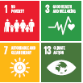 |
| Solar pumping for irrigation
Use of solar water pumping systems for irrigation within agricultural production to replace diesel pumps, displacing fossil fuel use and associated GHG emissions. |
✔ | ✔ | MININFRA, MINAGRI (RAB, RWRB) | 285 million USD. | Reduced dependence on imported energy and increased food security. |  |
|
| Conditional measures | |||||||
| Electricity | |||||||
| Solar mini-grids
68 MWp of solar mini-grids to be installed in off-grid rural areas by 2030, as reflected in the Rural Electrification Strategy. Displacement of traditional biomass fuels, diesel and kerosene for domestic energy use. |
✔ | ✔ | ✔ | MININFRA (REG, EDCL) | Total costs est. 206 million USD (incl. battery replacements) | Reduced dependence on availability of traditional biomass fuels, which is vulnerable to climate variability. Reduced pressure on forests and forest biodiversity. Increased adaptative capacity as a result of increased off-farm business for rural community having access to electricity/energy. | 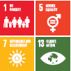 |
| Transport | |||||||
| Public transport infrastructure
Wide range of measures including bus rapid transport (BRT) project, bus lanes, non- motorised transport lanes, and other modal shift projects contained in the Transport Sector Strategic Plan as part of the NST1. |
✔ | ✔ | MININFRA (RTDA, REMA, RURA, CoK, transport operators) | 50 million USD (but cost estimates are limited to bus measures only). | Increased resilience of transport infrastructure. Improved health and reduction of harmful pollutants, enhacing resilience of population to disease and adverse climate impacts. | 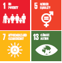 | |
| Electric vehicles (EVs)
The e-mobility programme plans for the phased adoption of electric buses, passenger vehicles (cars) and motorocycles from 2020 onwards, resulting in displaced conventional vehicle sales, transport fuel imports and associated GHG emissions. |
✔ | ✔ | MININFRA (RTDA, REMA, RURA, CoK, transport operators) | Total costs including EVs and charging infrastructure est. up to 900 million USD. | Reduction of harmful pollutants, enhacing resilience of population to disease and adverse climate impacts. | 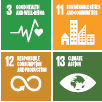 | |
| Buildings and agriculture | |||||||
| Off-grid and rooftop solar electrification
Penetration of off-grid solar and rooftop solar PV panels consistent with the ESSP targets of around 1,500,000 households to be electrified through, equivalent to 250,000 connections per year. Displacement of grid power and diesel consumption and associated GHG emissions. |
MININFRA (REG, EDCL, EUCL) | 600 million USD | Reduced dependence on imported energy and increased resilience and energy security of buildings, households and companies. | 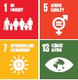 | |||
| Solar water heater (SWH) programme
Installation of solar thermal water heaters within urban residential buildings supported by use of loans and grants to subsidise purchase costs, as part of the National Green Building Code minium compliance system. |
MININFRA (RHA, EDCL) | SWH costs est. 52 million USD. Support programme est. 8 million USD. | Improved climate resilience of buildings and reduced reliance on material and energy consumption, including energy imports. | ||||
| Promotion of on-farm biogas for energy
Increased use of on-farm anaerobic digestion of manure for bioenergy (bio-digestors). |
MININFRA, MINALOC (REG, EDCL, local government,RAB) | 62 million USD | Reduced dependence on availability of traditional biomass fuels, which is vulnerable to climate variability. Reduced pressure on forests and forest biodiversity, and food security | 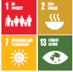 | |||
Table 5.4 Mitigation measures: INDUSTRIAL PROCESSES AND PRODUCT USE (IPPU)
| Measures | Timeline | Line ministry (implementing entities) | Funding estimates 2015-2030 | Adaptation benefits | Alignment with SDGs | ||
|---|---|---|---|---|---|---|---|
| 2015- 2020 | 2020- 2025 | 2025- 2030 | |||||
| Unconditional measures | |||||||
| Clinker and cement production | |||||||
| Increased pozzolana use in cement
Increasing the share of volcanic pozzalanas used within national cement production beyond current cement-to-clinker ratio of 0.7, with target for an incremental 5% substitution of clinker with pozzolana through 2030. Reduced clinker produciton and associated calcination process CO2 emisisons. |
✔ | ✔ | MOE, MINICOM (REMA, CCL) | Capital costs est. 1.2 million USD. Pozzolana material costs est. 7 million USD through 2030. | Reduced dependence on imported coal, which results in reduction of cement production costs, thereby contributing to address national cement demand for adaptation to the effects of climate change. | ||
| Fluorinated gases substitution | |||||||
| Fluorinated gases substitution
Gradual substitution of F-gases by less polluting substitutes, implemented as part of Rwanda’s commitments to the Kigali Amendment to the Montreal Protocol on Substances that Deplete the Ozone Layer. F-gases not to exceed the following percentages: (a) 2020 to 2024: 95%; (b) 2025 to 2028: 65%; (c) 2029 to 2033: 30%. |
✔ | ✔ | MOE (RSB, REMA, private sector) | Additional capital costs est. 3.2 million USD. Material costs est. 20 million USD through 2030. | Reduction of climate impacts from F-gases with high GWP, which results in enhanced population resilience to adverse climate impacts. | 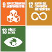 | |
Table 5.5 Mitigation measures: AFOLU (AGRICULTURE)
| Measures | Timeline | Line ministry (implementing entities) | Funding estimates 2015-2030 | Adaptation benefits | Alignment with SDGs | ||
|---|---|---|---|---|---|---|---|
| 2015- 2020 | 2020- 2025 | 2025- 2030 | |||||
| Unconditional measures | |||||||
| Crops and managed soils | |||||||
| Soil and water conservation (crop rotation)
Continous crop rotation of up to 600,000 Ha, leading to prevention of soil erosion and reduction of CO2 and N2O emissions and carbon sequestration in soils. |
✔ | ✔ | MINAGRI, MOE (RAB, RFA, RWRB) | 235 million USD | Increased food security through enhanced soil fertility, increased crop stability and reduced soil erosion. Cleaner water provision, through reduced nutrient and soil runoff. |  |
|
| Livestock | |||||||
| Improved livestock husbandry
Promotion of better livestock feed (i.e. legume fodder species) and training in better livestock management, under the Rwanda Livestock Master Plan. Reduction in CH4 emissions from enteric fermentation. |
✔ | ✔ | MINAGRI (RAB) | 279 million USD | Increased food security through enhanced yields. |  |
|
| Improved manure management
Adoption of more efficient manure management systems, including promotion of collective farms and training, under the Rwanda Livestock Master Plan. Reduction in GHG emissions from manure management. |
✔ | ✔ | MINAGRI (RAB) | 30.5 million USD | Increased food security through enhanced yields. | |
|
| Crops and managed soils | |||||||
| Improved fertilizers
Increased use of organic waste in soil fertilizers, supported by target to apply composting within all agricultural households by 2030, and more judicious fertilizer use and promotion of fertigation to enhance fertiliser uptake. |
✔ | ✔ | MINAGRI (RAB) | 77 million USD | Enhanced effectiveness of fertilizer application, thereby supporting agricultural activities of vulnerable farmers. Reduced compostable waste related health risks such as dengue fever. Enhanced soil fertility and reduced soil erosion. |  |
|
| Soil and water conservation (terracing)
Installation of 165,000 Ha land protection terracing structures in sloped arable areas to present soil erosion, leading to reduction of CO2 and N2O emissions and carbon sequestration in soils. |
✔ | ✔ | MINAGRI (RAB) | 924 million USD | Increased food security through enhanced soil fertility, increased crop stability and reduced soil erosion. Cleaner water provision, through reduced nutrient and soil runoff. | |
|
| Soil and water conservation (multicropping)
Multicropping of coffee and bananas of up to 40,000 Ha, leading to prevention of soil erosion and reduction of CO2 and N2O emissions and carbon sequestration in soils. |
✔ | ✔ | MINAGRI (RAB, NAEB) | 173 million USD | Increased food security through enhanced soil fertility, increased crop stability and reduced soil erosion. Cleaner water provision, through reduced nutrient and soil runoff. | |
|
| Conservation tillage:
Reduction in vertical movement of soil, leaving more crop residue on the soil surface, thereby reducing soil erosion, reduction of CO2 and N2O emissions and carbon sequestration in soils. |
✔ | ✔ | MINAGRI (RAB) | 128 million USD | Increased food security through enhanced soil fertility, increased crop stability and reduced soil erosion. Cleaner water provision, through reduced nutrient and soil runoff. | |
|
| Livestock | |||||||
| Improved livestock species and population:
Replacement of 10% domestic cows with improved cow species; expansion of fish farming, poultry and other small livestock to increase protein food supply without increasing cows; and change in livestock mix. Reduction in CH4 emissions from enteric fermentation. |
✔ | ✔ | MINAGRI (RAB) | 156 million USD | Increased food security through introduction of more drought resistant livestock species and enhanced yields. | |
|
Table 5.6 Mitigation measures: WASTE
| Measures | Timeline | Line ministry (implementing entities) | Funding estimates 2015-2030 | Adaptation benefits | Alignment with SDGs | ||
|---|---|---|---|---|---|---|---|
| 2015- 2020 | 2020- 2025 | 2025- 2030 | |||||
| Unconditional measures | |||||||
| Solid waste | |||||||
| Landfill gas utilisation
Extraction and utilization of landfill gas (LFG) for power generation in connection to semi- or fully- controlled landfills for urban areas. Reduced CH4 emissions from landfill sites and avoided CO2 emissions from displacement of fossil-based electricity use. |
✔ | MININFRA, MINALOC (RURA, REMA, CoK, municipal and local government, WASAC) | Investment in LFG plants and improved landfills est. 28 million USD. | Creation of revenue generation opportunities of stakeholders in the waste management process chain. Improved quality of water, soil and local atmosphere. Increased access to electricity and reduced dependency on traditional biomass energy. |  |
||
| Waste-to-energy (WtE) plants
Development of WtE plants in Kigali and other urban areas through energy recovery options other than LFG. Avoided CO2 emissions from displacement of fossil-based electricity use. |
✔ | MININFRA, MINALOC (RURA, REMA, CoK, municipal and local government, WASAC) | Total costs est. 8 million USD per year | Creation of revenue generation opportunities of stakeholders in the waste management process chain. Increased access to electricity and reduced dependency on traditional biomass energy. | |||
| Aerobic composting
Development of commercial scale aerobic composting systems for agricultural and forestry residue, manure, food processing, household kitchen and garden waste, and biosolids (organic solids from treated sewage). Reduction in CH4 emissions, since methane-producing microbes are not active in the presence of oxygen. |
✔ | MININFRA, MINALOC (RAB, RURA, REMA, CoK, municipal and local government, WASAC) | Capacity building and program implementat ion costs 5 million USD. Annual costs est. 6 million USD. | Improved retention of soil fertiliser and enhancing soil buffering capacity. Increased food production and nutrition security. Creation of revenue generation opportunities for local communities. | 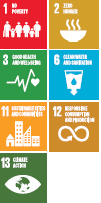 | ||
| Waste water treatment and re-use | |||||||
| Waste-water treatment plants (WWTP)
Investment in wastewater treatment and reuse technology, reducing methane emissions from wastewater and providing a nutrient-rich digestate that can be used as a fertilizer. Reduction of CH4, and CO2 emissions. |
✔ | ✔ | MININFRA, MINALOC (RAB, RURA, REMA, CoK, municipal and local government, WASAC) | Capacity building and program implementat ion costs 5 million USD. Annual costs est. 6 million USD. | Improved retention of soil fertiliser and enhancing soil buffering capacity. Increased food production and nutrition security. Creation of revenue generation opportunities for local communities. | ||
Figure 5.7 below shows the funding requirements associated with all identified mitigation options, estimated at 5.7 billion USD through 2030. These represent the capital investment costs required for new plant, installations and equipment. 9 The investment levels for each sector broadly correspond to the estimated mitigation shares across each emitting sector, with agriculture and energy projects accounting for the majority (each accounting for 47% of the total 2020-2030 respectively). Investments in waste facilities account for the bulk of the remaining requirement. In order to achieve the projected mitigation outcomes, around half of the total 5.7 USD billion will be required in the period 2020-2025 and half in the period 2025-2030.
Figure 5.7 Investment requirements for all identified measures through 2030
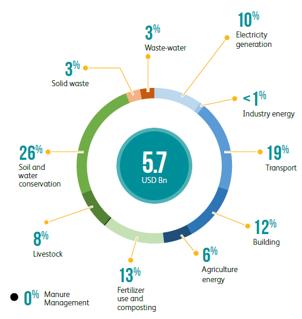
Table 5.7 Investment requirements for all mitigation measures (USD million)
| Sector | 2020-2025 | 2025-2030 | 2020-2030 |
|---|---|---|---|
| Electricity generation | 495 | 57 | 552 |
| Manufacturing industry | 6 | 19 | 26 |
| Transport | 506 | 585 | 1091 |
| Buildings | 510 | 150 | 660 |
| Agriculture | 306 | 20 | 327 |
| Energy - total | 1,824 | 831 | 2,655 |
| IPPU - total | 4 | 0 | 4 |
| Fertilizer use and composting | 179 | 540 | 719 |
| Manure | 15 | 15 | 30 |
| Livestock | 206 | 231 | 437 |
| Soil and water conservation | 299 | 1,160 | 1,459 |
| Agriculture - total | 700 | 1,946 | 2,645 |
| Solid waste | 194 | 0 | 194 |
| Wastewater | 89 | 89 | 178 |
| Waste - total | 83 | 89 | 372 |
| TOTAL | 2,811 | 2,866 | 5,677 |
Figure 5.8 shows the estimated funding requirements according to the unconditional (domestically supported) and conditional contributions for the periods 2020-2025 and 2025- 2030, and through to 2030 as a total.
Figure 5.8 Estimated investment requirements for NDC measures
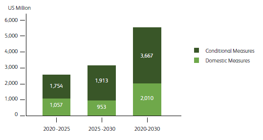
Rwanda is heavily dependent upon its natural resources including land, water, and forests. Over two-thirds of the population engage in agriculture, forestry, and tourism for income and food security. Agriculture accounts for approximately one-third of Rwanda’s GDP, and around one- half of power generation comes from small-scale hydropower. Economic growth was solid, averaging 6.1% over (2013-2016) against the target of 11.5% over the period 2013-2020. Growth in all sectors while positive and resilient in the face of a slowing global economy, did not meet targets. Agriculture averaged 4.1% compared to 8.5% (targeted). These sectors provide jobs and income for a majority of Rwanda’s population. However, the impacts of climate change have increasingly undermined the economic gains in recent years. NST1 asserts that agricultural growth was mainly affected by crop diseases and climate change effects.
In response to the growing climate change challenges to the economy, Rwanda has put in place a legal, policy and strategic framework to deal with climate change and climate variability induced risks and economic losses through (among other approaches) reducing vulnerability and building resilience to the impacts of climate change.
At the international and regional levels, it has ratified the United Nations Framework Convention on Climate Change (UNFCCC) as a Non-Annex 1 Party in 1995 and later the Kyoto Protocol. Rwanda has also ratified the Paris Agreement, which deals primarily with greenhouse emissions mitigation, adaptation and financing. As part of the PA implementation, Rwanda is submitting a revision of the NDC with clear results framework and resource mobilization targets that will realistically guide its successful implementation.
The adaptation component in Rwanda’s updated NDC involves quantified targets for adaptation and resilience, criteria-based evaluation of priority interventions, and development of a monitoring and evaluation framework for adaptation actions to strengthen national capacity for resource mobilization that will be instrumental to supporting climate action phased over 2025 and 2030 time horizons.
Rwanda’s economy depends primarily on agriculture, which is predominantly rain fed. This makes the country highly vulnerable to climate change. The country is still water scarce with 670 m3 of water per capita per year and 25% of the population are still unable to access safe drinking water (MoE, 2017).
Land is also vulnerable to heavy rainfall associated with soil erosion and landslides resulting in the loss of fertility in North, Western, and Southern province, while Eastern Province is often vulnerable to drought (GoR, 2015a). The high population density (415 inhabitants per square kilometre in 2012), puts pressure on natural resources (land for housing, agriculture, wood for domestic use in construction, cooking, infrastructure, etc.). Without proper land use planning and implementation, and with a growing population, these pressures are likely to increase.
In 2016, it was reported that 62.60% of the urban population live in informal settlements, while less than 20% of the urban population live in areas covered by master plans had storm water considerations in 2016 (MININFRA, 2017). In the health sector, major issues are related to the capacity gaps particularly at the district level (district health units) that limits effective coordination of health services. In the fiscal year 2016/2017, 308 malaria incidents per 1,000 population were reported and the malaria proportion mortality rate was at 5.7 per 1,000 in the same year.
Climate change adaptation is being mainstreamed in the transport sector by increasing the number of all-weather roads through improving road infrastructure from unpaved to paved roads with a focus on national roads. In 2018, from a total length of national roads of 2749km, 1385.5km were paved (50%). Financial limitation is one of the major challenges among others, which results in gaps for technical and technological capacity, as well as pressure on natural resources linked to high population density.
In addition to the above-mentioned impacts and vulnerability to climate change, other challenges to the implementation of adaptation and resilience options are mainly classified at policy/strategic; global/national (sub-national); program and project levels. Both the 2017 and 2018 Rwanda NDC implementation and partnership plans identified the following areas to have broadly captured the demonstrated gaps that need to be addressed and strengthened (GoR, 2018c):
The current updated NDC seeks to accelerate Rwanda’s socio-economic growth by holistically addressing sector specific vulnerabilities and unlocking and directing domestic and external investments to adaptation for effective climate action.
Rwanda’s adaptation and resilience priorities draw upon the Green Growth and Climate Resilience Strategy adopted in 2011 with a time horizon of 2050. The strategy has 14 Programmes of Action (PoA) of which the following programmes that include adaptation to climate change in the following programmes:
A recent review of the strategy indicated that it is still valid and relevant to Rwanda’s Vision 2050 as well as strategic plans - such as the National Strategy for Transformation (NST) for the period between 2018 and 2024 (MoE, 2018). Furthermore, in 2019, a new Environment and Climate Change Policy was adopted with the following relevant objectives (MoE, 2019):
This is a demonstration of the progressive policy relevance of climate change to Rwanda’s economic growth and development that lends the momentum to address climate change in general and adaptation/resilience in particular as an integral component to national development priorities. These strategic and policy relevant areas have outlined priorities for the NDC adaptation analytical framework and will continually inform planning, resources mobilization and implementation of NDC in the medium (2025) to long term in 2030 as well as influence the achievement of climate action relevant to SDGs.
Figure 6.1 summarises the key steps for the adaptation component that were followed in the updated Rwanda’s NDC. The focus in this process was:
The methodology was based on an extensive review of relevant documents on climate adaptation that have developed over time starting with the Green Growth and Climate Resilience Strategy and the associated sector working papers. It is important to note that this strategy was the basis of the INDC and consequently the first NDC. Other documents and reports that were reviewed to significantly inform and influence the revision process were the SPCR along with the Gaps and Needs Analysis, Forest Investment Plans (FIP) and the NDC implementation plans (2017 & 2018) as well as the national reports on the vulnerability index (2015 and 2019) and the Third National Communication. The Sector Strategic Plans (SSPs) served as the critical reference documents for sector consultations and included identifying and refining the analytical framework that captures climate adaptation/resilience. As shown in Figure 6.1, the methodology considered the development of a long list of adaptation actions, their prioritization, and indicators development which informed the framework for the updated NDC activities and the NDC implementation plan.
Figure 6.1 Framework of analysis and scope for the adaptation work
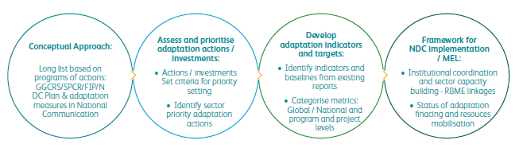
Consultation with experts from multiple sectors was conducted based on the developed analytical framework. The specific objectives for the consultation were:
In order to influence effective mainstreaming of climate adaptation in sector priorities, and consequently in a strategic way for national uptake including at the NST and therefore policy levels, clear adaptation metrics including indicators and targets were generated and agreed upon as measures to guide the collection of gender disaggregated data.
The table below presents a summary of prioritized sector adaptation interventions, corresponding indicators, indicator category, and timeline for the implementation, responsible government ministries, and implementing lead agencies, and the estimated adaptation funding requirement, mitigation benefits and the alignment with SDGs that are directly relevant to the sector intervention. Basing on the experiences in reporting at global level (including expectations of adaptation investment funds) and national level (including projects), the indicators outlined in the table below were divided into categories A and B for global and national reporting, respectively.
The indicators are also aligned with baselines and adaptation targets that have drawn from existing national initiatives on climate change adaptation and resilience. It should be noted that the indicated timeline shown in Table 6.1 from 2020 to 2030 corresponds to the implementation of the mentioned adaptation interventions, but that this does not exclude the fact that a number of these interventions were implemented upon the submission of the first NDC, i.e. the period from 2015 to 2020.
Table 6.1 Adaptation measures
| SN | Intervention | Indicator | Line ministry (implementing entities) | Timeline | Category of indicator | Funding estimate | Mitigation benefits | Alignment with SDGs | |
|---|---|---|---|---|---|---|---|---|---|
| 2020- 2025 | 2025- 2030 | ||||||||
| Water | |||||||||
| 1 | Develop a National Water Security through water conservation practices, wetlands restoration, water storage and efficient water use | Water storage per capita | MoE/MINAGRI (RWRB/REMA/ RAB, Private sector) | ✔ | ✔ | A | 164.3 million USD | Improved quantity and quality of water resources which sustain new and existing hydropower plants | 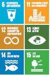 |
| Renewable water resource availability per capita per annum (m³ /capita/a) | MoE / MININFRA (RWRB/REMA/ WASAC, Private sector) | ✔ | ✔ | B | |||||
| 2 | Develop water resource models, water quality testing, and improved hydro-related information systems | Percentage of catchments with water balance and allocation models | MoE (RWRB/ Private sector) | ✔ | ✔ | B | 10 million USD | ||
| 3 | Develop and implement a catchment management plan for all Level 1 catchments | Number of operational hydrological stations | MoE (RWRB/ Private sector) | ✔ | B | 360 million USD | |||
| Percentage of water bodies with good ambient water quality | MoE (RWRB/ Private sector) | ✔ | ✔ | B | |||||
| Agriculture | |||||||||
| 4 | Develop climate resilient crops and promote climate resilient livestock | Number of climate resilient crop varieties developed | MINAGRI (RAB, NAEB, REMA, Private sector, Civil society) | ✔ | ✔ | B | 24 million USD | Reduced GHG emissions from improved land |  |
| Percentage of farmers adopting resilient crop/ varieties | MINAGRI (RAB, NAEB, Private sector, Civil society) | ✔ | ✔ | B | |||||
| Percentage of crossbreed livestock at national herd species | ✔ | ✔ | B | ||||||
| 5 | Develop climate resilient postharvest and value addition facilities and technologies | Capacity of storage constructed in MT | MINAGRI (RAB, NAEB, Private sector, Civil society) | ✔ | ✔ | B | 200 million USD | Reduced GHG emissions from improved postharvest management |  |
| 6 | Strengthen crop management practices (disease prevention, diagnostic, surveillance and control) | Number of farmers using surveillance tool (FAW Database, BXW apps etc.) | MINAGRI (RAB, NAEB, Private sector, Civil society) | ✔ | ✔ | B | 3 million USD | Reduced GHG emissions from improved crop management | |
| 7 | Develop sustainable land management practices (soil erosion control; landscape management) | Area of Land under erosion control measures and used optimally | MINAGRI (RAB, NAEB, RLUMA, Districts, Private sector, Civil society) | ✔ | ✔ | B | 346.1 million USD | Reduced GHG emissions from improved land use changes |  |
| Percentage of arable land (to the land area) | ✔ | ✔ | A | ||||||
| 8 | Expand irrigation and improve water management | Number of hectares under irrigation within IWRM framework | MINAGRI/ MoE (RAB, NAEB, RLUMA, RWRB, Districts, Private sector, Civil society) | ✔ | ✔ | A | 2,261 million USD | Efficient irrigation reduces nitrogen losses including emissions from nitrous oxide |  |
| 9 | Expand crop and livestock insurance | Ha of crops under insurance | MINAGRI (RAB, NAEB, Banks, insurance companies, Private sector) | ✔ | ✔ | B | 109.6 million USD | Reduced GHG emissions from improved management of crop failure |  |
| Number of cows under insurance | ✔ | ✔ | B | ||||||
| Land and Forestry | |||||||||
| 10 | Development of Agroforestry and Sustainable Agriculture (control soil erosion and improved soil fertility) | Change in land area covered by agroforestry | MINAGRI / MoE / MINALOC, (RAB, REMA, RLUMA, RFA, Private sector, Civil society) | ✔ | ✔ | A | 92 million USD | Improved GHG sink capacity/ reduced emissions |  |
| 11 | Promote afforestation / reforestation of designated areas | Hectares of forest restored/ afforested in program area and hectares of protected forest in project/ program area | MoE/ MINAGRI / MINALOC, (RAB, REMA, RFA, RLUMA, Private sector, Civil society) | ✔ | ✔ | B | 16.8 million USD | Improved GHG sink capacity/ reduced emissions | |
| Percentage of forest area (to the land area) | ✔ | ✔ | A | ||||||
| 12 | Improve Forest Management for degraded forest resources | Number of Ha of forest plantation whose management is transferred to the private operators | MoE/ MINAGRI / MINALOC, (RAB, REMA, RFA, RLUMA, Private sector, Civil society) | ✔ | ✔ | B | 8.1 million USD | Improved GHG sink capacity/ reduced emissions | |
| Number of Ha of forest plantation whose management is transferred to the private operators | ✔ | ✔ | B | ||||||
| Change in Forest area degraded/ rehabilitated | ✔ | ✔ | B | ||||||
| 13 | Integrated approach to planning and monitoring for sustainable land management | National land use development master plan (NLUDMP) that includes comprehensive measures and procedures for sustainable land use practices | MoE / MINAGRI / MININFRA / MINALOC (RLUMA, RAB, RHA, REMA, RFA, Districts, Private sector, Civil society) | ✔ | B | 60 million USD | Reduced GHG emissions from efficient land use and transport plus increased surface area for carbon sink |  |
|
| Detailed spatial plans for all districts | ✔ | B | |||||||
| % of compliance of land use development plans (LUDP) to the NLUDMP | ✔ | B | |||||||
| 14 | Develop a harmonized and integrated spatial data management system for sustainable land use management | Accurate data on exposure to climate vulnerability on households (HHs) and infrastructures in high risk areas reported | MoE / MINAGRI / MININFRA / MINALOC (RLUMA, RAB, RHA, REMA, RFA, Districts, Private sector, Civil society) | ✔ | ✔ | B | 20 million USD | Reduced GHG emissions from efficient land use and increased surface area for carbon sink | |
| Percentage of operational integrated geospatial information framework integrated with environmental and socio- economic statistics | ✔ | ✔ | B | ||||||
| 15 | Inclusive land administration that regulate and provide guidance for land tenure security | Percentage of registered state land optimally used | MoE / MINAGRI / MININFRA / MINALOC (RLUMA, RAB, RHA, RFA) | ✔ | ✔ | B | 5 million USD | Reduced GHG emissions from efficient land use and surface area for carbon sink | 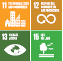 |
| Model linking land use/ administration in place | ✔ | B | |||||||
| Human Settlements | |||||||||
| 16 | High density buildings and informal settlement upgrading | Percentage of registered state land optimally used | MININFRA/ MoE (RHA, RLUMA, RWRB, WASAC, Districts, Private Sector, RDB, Civil society) | ✔ | ✔ | A | 400 million USD | Reduced GHG emissions from efficient land use, electricity and transport plus increased surface area for carbon sink | |
| ✔ | ✔ | B | |||||||
| Average share of the built-up area of cities that is open and green space for public use for all (SDG) | ✔ | ✔ | B | ||||||
| Access to water and sanitation services | ✔ | ✔ | B | ||||||
| 17 | Storm water management | Percentage of urban population in areas covered by master plans with storm water considerations | ✔ | ✔ | B | 400 million USD | Sustenance of new and existing hydropower plants |  |
|
| Health | |||||||||
| 18 | Strengthen preventive measures and create capacity to adapt to disease outbreaks | Malaria proportional mortality rate per 1,000 population | MINISANTE, (RBC, Meteo Rwanda, Civil society) | ✔ | ✔ | A | 185 million USD | Challenging to evaluate the several factors for health related GHG emissions |  |
| Transport | |||||||||
| 19 | Improved transport infrastructure and services | Environmental and engineering guidelines developed (for climate resilient road infrastructure) | MININFRA / MINEMA ( RTDA, RHA, Meteo Rwanda; Districts) | ✔ | B | 600 million USD | Reduced GHG emissions from improved transport services which reduces motorized private transport |  |
|
| Reduction of length of roads vulnerable to flood and landslides | ✔ | ✔ | B | ||||||
| Number of passengers using the public transport each year | MININFRA (RTDA, Private Sector) | ✔ | ✔ | B | |||||
| Mining | |||||||||
| 20 | Climate compatible mining | Percentage of companies deploying climate compatible mining | MoE/ MINICOM (RMB, Private Sector, Civil society) | ✔ | ✔ | B | 59.3 million USD | Reduced GHG emissions from energy efficiency measures | 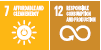 |
| Cross-cutting | |||||||||
| 21 | Disaster risk monitoring | Population covered by Disaster risk reduction (DRR) programs | MINEMA / MoE (Meteo Rwanda, REMA, RWRB, MINALOC, MININFRA, NISR) | ✔ | B | 20 million USD | Reduced GHG emissions from community- based DRR programs such as improved farming techniques |  |
|
| Number of effective city contingency plans developed | ✔ | ✔ | B | ||||||
| 22 | Establish an integrated early warning system, and disaster response plans | Percentage of extreme weather events for which advance warning was provided at least 30 minutes in advance | ✔ | ✔ | A | 10 million USD | |||
| 23 | Institutional capacity building and development for cross-sector NDC implementation | Number of staff who acquired technical skills to effectively coordinate and report on NDC implementation | MoE (REMA and other NDC participating sectors) | ✔ | ✔ | B | 6 million USD | Reduced GHG emissions from improved access to technology and knowledge |  |
| 24 | Access to finance (Resource mobilisation) | Cumulative volume of finance [USD millions] mobilized for climate and environmental purposes | MINECOFIN / MoE (FONERWA, REMA and other NDC participating sectors) | ✔ | ✔ | A | 3 million USD | Reduced GHG emissions from NDCs projects implementation | |
6.4 Funding requirements
The cost estimates for adaptation interventions was made for the two phases, i.e. 2020-2025 and 2025-2030. Estimates were made by referring to different planning documents, among others, the National Strategy for Transformation (NST1: 2017-2024), Sector Strategic Plans (SSPs) and the cost of other similar projects. Some interventions will be contingent on the availability of external financial support (conditional) while others may be implemented through internal funding (unconditional) or co-financing (internal and external sources of budget). The total amount of NDC adaptation interventions is estimated at above 5.3 billion USD through 2030 as detailed in Table 6.2. Figure 6.2 below summarizes the funding requirements per sector associated with all identified adaptation interventions, estimated at 5.3 billion USD through 2030.
Figure 6.2 Adaptation investment levels from the total 5.3 billion USD through 2030
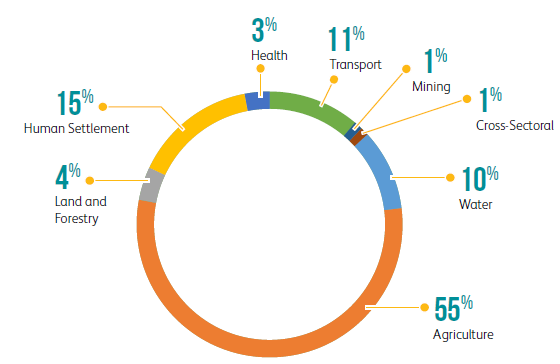
Table 6.2 Estimated costs of adaptation interventions
| Activity | Intervention | Budget 2020-2025(USD) | Budget 2025-2030(USD) | Unconditional | Conditional |
|---|---|---|---|---|---|
| IWR planning and management | Develop a National Water Security through water conservation practices, wetlands restoration, water storage and efficient water use | 100,000,000 | 64,308,682 | ✔ | |
| Develop water resource models, water quality testing, and improved hydro-related information systems | 5,000,000 | 5,000,000 | ✔ | Develop and implement a management plan for all Level 1 catchments | 180,000,000 | 180,000,000 | ✔ |
| Climate Resilient Value Chain Development[2] | Develop climate resilient crops and promote climate resilient livestock | 12,029,020 | 12,029,020 | ✔ | |
| Develop climate resilient postharvest and value addition facilities and technologies | 100,000,000 | 100,000,000 | ✔ | ||
| Strengthen crop management practices (disease prevention, diagnostic, surveillance and control) | 1,500,000 | 1,500,000 | ✔ | ||
| Develop sustainable land management practices (soil erosion control; landscape management) | 173,086,918 | 173,086,918 | ✔ | ||
| Expand irrigation and improve water management | 765,219,726 | 1,496,264,765 | ✔ | ||
| Expand crop and livestock insurance | 18,279,826 | 91,399,132 | ✔ | ||
| Sustainable management of forestry and Agroforestry | Development of Agroforestry and Sustainable Agriculture (control soil erosion and improved soil fertility) | 46,033,406 | 46,033,406 | ✔ | |
| Promote afforestation / reforestation of designated areas | 8,417,567 | 8,417,567 | ✔ | ||
| Wood Supply Chain, Improved Efficiency and Added Value | Improve Forest Management for degraded forest resources | 4,067,245 | 4,067,245 | ✔ | |
| Climate- sensitive Integrated Land Use Planning and Spatial Planning | Integrated approach to planning and monitoring for sustainable land management | 30,000,000 | 30,000,000 | ✔ | |
| Develop a harmonized and integrated spatial data management system for sustainable land use management | 10,000,000 | 10,000,000 | ✔ | ||
| Inclusive land administration that regulate and provide guidance for land tenure security | 2,500,000 | 2,500,000 | ✔ | ||
| Land Use and Spatial Planning | High density buildings and informal settlement upgrading | 200,000,000 | 200,000,000 | ✔ | |
| Storm water and Drainage Management | Storm water management | 200,000,000 | 200,000,000 | ✔ | |
| Vector-based disease prevention | Strengthen preventive measures and create capacity to adapt to disease outbreaks | 85,000,000 | 100,000,000 | ✔ | |
| Sustainable, climateresilient roads and bridges | Improved transport infrastructure and services | 300,000,000 | 300,000,000 | ✔ | |
| Climate compatible mining | Climate compatible mining | 29,645,336 | 29,645,336 | ✔ | |
| DRR program (Disaster preparedness and emergency response) | Establish an integrated early warning system, and disaster response plans | 5,000,000 | 5,000,000 | ✔ | |
| Disaster risk monitoring | 10,000,000 | 10,000,000 | ✔ | ||
| Institutional capacity development | Institutional capacity building and development for cross-sector NDC implementation | 3,000,000 | 3,000,000 | ✔ | |
| Finance (Resources mobilization) | Access to finance | 1,500,000 | 1,500,000 | ✔ | |
| TOTAL (USD) | 2,290,279,044 | 3,073,752,071 | ✔ | ✔ | |
| OVERALL COST (USD) | 5,364,031,115 | 40% | 60% |
The successful implementation of Rwanda’s NDC requires an effective Measurement, Reporting and Verification (MRV) system, enabling the country to monitor the effectiveness of its mitigation and adaptation measures and facilitating its access to climate finance. Internationally, the implementation of an MRV system is the basis for understanding the current GHG emission levels, the ambition of the existing efforts, and the progress made in contributing towards the goals of the Paris Agreement.
All Parties to the UNFCCC are required to implement a domestic MRV system that can annually quantify national GHG emissions by sources and removals by sinks, and report the specific actions made to identify and implement mitigation measures. This information is at present compiled by Rwanda and is submitted to the UNFCCC through two channels:
Rwanda submitted its Third National Communication (TNC) in September 2018, reporting on its national GHG inventory up to the year 2015. The country is currently preparing its first BUR and an updated GHG inventory. The Paris Agreement contains several additional MRV requirements which, when taken together with the existing UNFCCC arrangements, provide an enhanced basis for Rwanda’s international reporting requirements relating to the mitigation component of the NDC.
New requirements are mainly covered by Article 13, which establishes a new Enhanced Transparency Framework (ETF) through which Parties must regularly account for their NDCs alongside other reporting requirements similar to those contained in NCs, BURs and the International Consultation and Analysis (ICA).
The ETF requires the NDC MRV system to transparently report progress made towards the targets defined in Rwanda’s NDC and to track the progress made in the implementation of mitigation and adaptation actions - as well as the use and results of means of implementation and support including capacity building, technology transfer, and finance. The MRV system also captures non-GHG impacts on environmental, social and economic impacts of the NDC actions that would lead to transformational change towards achieving national sustainable development goals. In the case of Rwanda, this must take into account gender mainstreaming that is central to Rwanda’s sustainable development process.
These national and international requirements for the three MRV dimensions overlap and there is value in demonstrating their linkages within the MRV system. For example, finance, capacity building and technical support have a direct impact on implementation of mitigation and adaptation actions. Therefore, Rwanda’s NDC MRV system will be instrumental in monitoring and reporting progress and use of support as well as facilitate identification of challenges to inform policy changes essential to improve implementation.
Rwanda has a robust national planning process coordinated by the Ministry of Finance Economic Planning and Research (MINECOFIN) through sector working groups (SWGs) that track implementation of sector priorities. The SWGs hold semi-annual meetings and workshops for progress reporting through Joint Sector Review consultative sessions. The Ministry of Environment (MoE) chairs the Environment and Natural Resources SWG that has the responsibility to monitor and evaluate the implementation of the NDCs through regular stakeholder consultative engagement. Under the MoE are agencies that regularly organize Thematic Working Group (TWG) sessions in the context of the national planning process that supports implementation including monitoring, evaluation and progress reporting on sub-sector priorities. Rwanda Environment Management Authority (REMA) has the overall responsibility for, and chairs, the Environment and Climate Change Thematic Working Group (E&CC TWG) that has technical oversight over implementation of climate change priorities.
The Ministry of Environment (MoE) chairs the Environment and Natural Resources SWG that has the responsibility to monitor and evaluate the implementation of the NDCs through regular stakeholder consultative engagement. Under the MoE are agencies that regularly organize Thematic Working Group (TWG) sessions in the context of the national planning process that supports implementation including monitoring, evaluation and progress reporting on sub-sector priorities. Rwanda Environment Management Authority (REMA) has the overall responsibility for, and chairs, the Environment and Climate Change Thematic Working Group (E&CC TWG) that has technical oversight over implementation of climate change priorities.
The E&CC TWG forum is the ideal platform for guiding the analytical framework, reporting updating and implementing both national mitigation and adaptation priorities. The Environment and Climate Change Thematic Working Group (E&CC TWG) will therefore serve as a forum for hosting the technical working committee for Rwanda’s NDC, and REMA as the Chair of the E&CC TWG will appoint a core team to the technical working committee that endorses the national NDC MRV. Therefore, the E&CC TWG forum through the technical working committee will serve as the national coordinator for all national institutions that implement sector specific mitigation, adaptation, finance as well as capacity building and technology transfer and support to operationalize the NDC MRV at the national level.
Figure 7.1 below summarises these institutional arrangements for tracking of NDC implementation including the national NDC MRV process.
Figure 7.1 Institutional arrangements for tracking Rwanda’s NDC MRV implementation

The chair for the technical working Committee for Rwanda’s NDC MRV, REMA, will guide the selection of members that will form the technical working committee to provide technical oversight and ultimately present the MRV to the E&CC TWG for official endorsement. Following the endorsement, REMA will communicate NDC MRV through the normal national reporting channels including the ENR SWG and the economic cluster chaired by the Ministry of Finance and Economic Planning (MINECOFIN) to inform policy and strategic decisions that ensure NDC MRV effectively supports national sustainable development. The following are key areas that form part of the mandate of the Committee:
The Results Based Monitoring and Evaluation (RBME) system is the principal repository and therefore appropriate platform for information and data monitoring and management for Environment and Natural Resources sector chaired by MoE. Thus, all climate change relevant data including NDC MRV managed and reported by the E&CC TWG will be processed and accessed through the RBME. Assessing and defining most suitable data sources is important for any MRV system to be effective.
The technical working committee for NDC MRV will play a critical role of the national level data and information generation and reporting and will be significantly involved in data gathering, transparency, and verification. The committee will ensure that Rwanda’s NDC MRV system links mitigation, adaptation and finance as well as support for capacity building and technology transfer as critical aspects of NDC implementation.
Primary data is generally collected at the local level and sectors/institutions have direct linkages with local levels (Districts) in sourcing relevant sector/priority action specific data and information including NDC MRV. This will be done with support of broad District based stakeholders through the Joint Action Development Forum (JADF), an opportunity for engagement of NGOs private sector and development partners to provide inputs into the NDC MRV process. MINALOC provides coordination oversight in facilitating local government data management flows to central level institutions. The RBME at MoE is the nodal point for uptake and processing of NDC MRV related data and MoE/REMA will facilitate E&CC TWG access to data on the RBME system for input and analysis.
The National Institute of Statistics Rwanda (NISR) is central to national data processes and has the ultimate role of validating national statistics through data and information authentication and therefore approval for national statistics shared externally. NISR will facilitate development and application of data protocols and annually review national level standards and guidelines for data inputs and aggregation to guide sector and/or agency generated data and information on mitigation/adaptation.
MINECOFIN is the ideal national institution for tracking NDC MRV related finance. FONERWA as the national fund for environment and climate change will liaise with MINECOFIN to manage data on finance and provide a platform to access finance data and information for national reporting. This information will be increasingly critical to guide resources mobilization that FONERWA must influence in filling finance gaps for the successful implementation of Rwanda’s NDC.
Gender mainstreaming is a priority at all levels of policy and implementation and the NDC MRV will ensure gender disaggregated data is captured and reported as well as engage private sector in the support for national NDC MRV processes.
The NDC MRV information will be packaged using appropriate reporting protocols and formats for national level as well as international reporting. At the national level, NDC MRV will be monitored, analyzed and reported semi-annually at the E&CC TWG and the ENR SWG (uploaded on the RBME system) using national planning driven process coordinated by MINECOFIN to inform policy and strategic planning and action oriented decisions. REMA has longstanding experience in reporting to UNFCCC through National communications (NC) and Biennial Update Reports (BURs). The technical working committee chaired by REMA will build on the past experiences to effectively coordinate national agencies responsible for data generation and management of NDC MRV reporting to UNFCCC.
The table below summarises Rwanda’s framework for tracking and reporting on progress of implementing the mitigation and adaptation goals outlined in this NDC. It summarises the institutions, fora, roles and responsibilities proposed to guide and support implementation of NDC MRV at the national level including policy and strategic decision levels. Supporting information on the mitigation and adaptation components are provided further below.
Table 7.1 Institutional arrangements for Rwanda’s NDC MRV management
| Overview of institutional arrangements | |||||||
|---|---|---|---|---|---|---|---|
| Policy and strategic decision levels/ Line Ministry | Roles and Responsibilities | ||||||
| Permanent Secretaries (PS) Forum | Monitors the implementation of NST1 and proposes measures to fast track its implementation. NDC MRV will be regularly presented to the forum by implementing institutions to ensure cross sector oversight over NDC to provide policy and strategic advisory and influence timely delivery of results. | ||||||
| Development Partners Coordination Group (DPCG) | The forum discusses achievements, challenges, policy actions, and propose measures to fast track implementation of NST1. It also facilitates alignment of programming and financing with priority areas outlined in NST1 and will provide support for finance as part of the NDC implementation including NDC MRV to track finance. | ||||||
| Economic Cluster Working Groups | Monitors implementation of NST1 in different clusters and will serve as a platform for integrating NDC MRV into high level decision making at the national level. Provide strategic guidance and orientation on policies and investments and will guide on the crucial role of NDC to deliver NST1 results. | ||||||
| MoE serves as chair of the ENR Sector Working Groups (SWG) & JSRs |
A forum for dialogue, ownership and accountability of the development agenda and making a case for NDC MRV to all stakeholders at sector level.
|
||||||
| Joint Action Development Forum (JADF) at District level | Although the central government institutions are engaged in reporting through the JSRs, primary data and information is generated at levels coordinated by Districts through MINALOC. Therefore relevant data will be collected and shared with sectors/institutions for processing and analysis to facilitate and inform overall national NDC MRV. Thus, the JADF that involves multiple stakeholders including NGOs, the private sector and Development Partners intervening in development programs including climate change serve a critical role in:
|
||||||
| MINECOFIN | In addition to the critical responsibility of reporting on finance, MINECOFIN is responsible for:
|
||||||
| MINALOC | Coordinates the implementation of Districts Development Strategies (DDSs) and upstream reporting on NDC MRV performance at local levels Ensure the alignment between DDSs and Districts Imihigo and their contribution to NST1 targets that include NDC MRV | ||||||
| NISR | Provides oversight over environmental statistics that include climate change (NDC MRV) at national level. NISR supports surveys including vulnerability to climate change analysis and autheticates data and information for internal and external use and consumption Directly populates data portals providing interactive access, to data and metadata to these portals and as such a critical NDC MRV reporting channel | ||||||
| REMA serves as the Chair of the Environment and Climate Change Thematic Working Group (E&CC TWG) | E&CC TWG, a national planning forum chaired by REMA will host a core team that forms the NDC MRV technical working committee with the following responsibilities:
|
||||||
| Mitigation | |||
| Line Ministry | Activity/Indicator | Lead Agency | Key stakeholders |
| MININFRA | Energy and related indicators | REG | REMA, RHA, RDB, MINECOFIN, FONERWA, MINALOC, RSB, MINISANTE, private sector, civil society |
| Transport, related inidcators | RTDA | RURA, MINALOC, CoK, MINECOFIN, FONERWA, operators, REMA, MoE , Private sector transport operators, financial institutions, civil society | |
| Waste relevant indicators | MINALOC Municipalities , CoK and districts | RURA, RHA, MoE , REMA, Private sector, NGOs, Civil Society, WASAC, REG, MINEACOM, MINAGRI, RDB, civil society | |
| MINICOM | IPPU related indicators | MINICOM | MINECOFIN, MINAGRI,, MoE, REMA, FONERWA, WASAC, NIRDA,RDB, REG, MINALOC, Private sector, civil society |
| MINAGRI | AFOLU (agriculture) related indicators | RAB and RFA | REMA, RFA, RURA, Private Sector, civil society, WASAC, higher learning and research institutions |
| Adaptation | |||
| Line Ministry | Activity/Indicator | Lead Agency | Key stakeholders |
| MoE | Percentage change in national climate change vulnerability index | REMA | All productive and social sectors/institutions of the Rwanda economy |
| MINALOC/MoE/MI NEMA | Number and Percentage of districts at high risk of suffering major climate change effect | REMA | |
| MINEMA | Average level of satisfaction of major Weather and Climate information institutional users with METEO RWANDA Weather and Climate information | Rwanda METEO | MoE, REMA, MINALOC, MININFRA, NISR, UR, MINEDUC, RDF, RNP, civil society |
| Rwanda Water Resources Board (RWRB) | Water storage per capita | RWRB | MoE, MINAGRI, UR/CAVM, MININFRA, Meteo Rwanda , REMA, RAB, civil society, WASAC, PSF, RLUMA, City of Kigali and MINALOC |
| Number (%) of (a) Households, and (b) Institutions with a Rain Water Harvesting (RWH) system installed. | |||
| MoE | Proportion of land surface covered by forest [Forest cover]. This excludes agro-forestry area. | RFA | REMA, FONERWA, RAB, RLUMA, civil society, districts, Private Sector, MINALOC |
| MINEMA | Percentage of extreme weather events for which advance warning was provided at least 30 min in advance | Rwanda METEO | MoE, REMA, MINALOC, MININFRA, NISR, UR, MINEDUC, RDF, RNP, civil society |
| Finance and support (Capacity building and technical support including technology transfer) | |||
| Line Ministry | Activity/Indicator | Lead Agency | Key stakeholders |
| MINECOFIN | Total amount of finance mobilized for Green Investments (by major category – Climate Change mitigation; Green Energy production etc.) | FONERWA | MOE, REMA |
| Rwanda Development Board (RDB) | Capacity building technical support and technology transfer | REMA | MoE/FONERWA and all NDC supporting institutions and organizations |
| High level National/Global indicators planned to harmonize reporting on climate adaptation/resilience | |||
| Line Ministry | Activity/Indicator | Lead Agency | Key stakeholders |
| MININFRA | Proportion of the rural population who live within 2 km of an all-season road (SDG indicator 9.1.1); | RTDA | MINECOFIN, MINALOC and Districts |
| MINISANTE/MINAG RI | Percentage of health centres with at least one food and nutrition outreach programme; | ECDC/RAB | NISR |
| MINEMA | Annual loss due to damage caused by weather-related hazards / number of deaths, missing persons and directly affected persons attributed to disasters per 100,000 population (SDG 13.1.1); | Rwanda METEO | MoE RAB, REMA, MINALOC, MININFRA, NISR, UR, MINEDUC, RDF, RNP, civil society |
| Number of people with access to improved climate-related early warning information or systems for extreme weather events | MINEMA | ||
| MINAGRI | Change in climate sensitive agricultural production / Proportion of agriculture land protected against erosion (NDC); | RAB/RWRB | NAEB, MINALOC, Districts, REMA, RWFA, RLUMA, Private Sector, civil society |
| RWRB | Freshwater withdrawal rate / National Water Security Plan to employ water storage and rain water harvesting, water conservation practices, efficient irrigation established and operational (NDC). | RWRB | MoE, MINAGRI, UR/CAVM, MININFRA, Meteo Rwanda , REMA, RAB, civil society, WASAC, PSF, RLUMA, City of Kigali and MINALOC |
| MINISANTE | Change of malaria hazards; | RBC | MINAGRI, MINALOC, MINEMA , Meteo Rwanda, civil society |
| MINECOFIN | Specialized support, and amount of support, including finance, technology and capacity-building, for mechanisms for raising capacities for effective climate change-related planning and management (SDG 13.B.1). | MoE | REMA, FONERWA, all institutions |
Monitoring and reporting requirements for Parties to the Paris Agreement are encapsulated within the UNFCCC process by way of new requirements set out in the Paris Rulebook governing implementation of the agreement. Drawing on the Paris Rulebook, Table 7.2 below lists some of the key aspects of an MRV system needed to track progress consistent with the mitigation component of NDC implementation.
Table 7.2 MRV systems needed to track NDC implementation
| MRV system | Key implementation aspects | |
|---|---|---|
| GHG emission and reductions | Assess current GHG emissions for all Intergovermental Panel on Climate Change (IPCC) reporting sectors and sub-sectors; | |
| Assess Busines-as Usual (BAU) GHGs, where dynamic baselines are considered for NDC modeling; | ||
| Assess current progress in reducing GHG emissions towards the overall target (by reviewing the greenhouse gas inventory), and expected future emissions (by reviewing greenhouse gas projections), at national and sectoral levels, to understand the aggregate impact of mitigation actions now and in the future. | ||
| Mitigation measures | Monitor the implementation of the mitigation measures (e.g. implementation of renewable energy generation measures, low carbon transport measures, waste projects); | |
| Assess whether the mitigation measures deliver the targeted impact on GHG emissions; | ||
| Assess whether the mitigation measures deliver the expected low emission development impact (e.g. implementation of solar water heating systems in households). | ||
| Finance of mitigation measures | Track climate finance flows for NDC implementation, including international public finance, national domestic budgets and private climate finance, to improve the overall transparency of climate finance flows, and | |
| Assess whether the scale/type of financing requirements for NDC implementation are being addressed. |
An MRV framework consistent with these requirements is presented in the Annex to this document. This will allow Rwanda to effectively track progress of the mitigation activities identified in this NDC consistent with UNFCCC reporting standards, and carry out ongoing evaluation of whether the country is on course to meet its targets through 2030.
This takes the form of a framework of indicators for each of the key emitting sectors, which can be used for international reporting as well as for domestic tracking of NDC implementation. Monitoring tables are provided for the four main IPCC reporting categories: Energy; IPPU; AFOLU; and Waste (noting that AFOLU includes only agriculture in this NDC). In addition, an aggregated economywide overall NDC progress monitoring template is presented.
The Monitoring, Evaluation and Reporting framework that includes MRV on financing in the case of adaptation aligns with the options and the relevant analytics agreed to by various stakeholder consultations. Additionally, an approach has been proposed to organize M&E framework in a way that facilitates reporting at selected levels. The levels have identified indicators that are relevant at global and national levels (see above).
The national level reporting will respond to data and information demands at strategic levels including NST and sector strategic plans that inform joint sector reviews and other reporting requirements at the prime minister and MINECOFIN levels at the central government and Imihigo reporting for sub-national entities in particular.
Importantly, these should ideally be guided by the ENR RBME framework which has oversight over cross cutting areas of environment and climate change in the national planning and budgeting framework.
Finally, the selection of indicator driven data will be required for program and projects design, implementation and reporting to funders. This reporting framework demands periodic and timely data collection, analysis and overall management to ensure efficient reporting. Moreover, the global versus national clustering will serve as a useful guide to identify targeted resources mobilization from both domestic and external sources. To the extent possible, national and global indicators design features must make a strong case for mobilizing resources and therefore must be smart and results oriented and formulated as outcome and/or impact level indicators.
The general guide to the selection of adaptation indicators has considered the following factors as critical:
The global climate financing agencies often create artificial divisions between climate change and development. This is especially the case for climate adaptation where “climate rationale” in the case of GCF seriously hampers the ability to direct resources to address the impacts of climate change. It is crucial that climate financing decisions acknowledge the seamlessness of climate adaptation and development even as climate rationale is reasonably pursued in validating finance flows to address the impacts of climate change.
Such analyses have included the economics of climate change that measured the economic costs of climate change and made a compelling case for increased financing, the Vulnerability index studies at various scales; national and sub-national outlining the vulnerability of districts and the design of investment plans including the SPCR and the FIP.
The NDC partnership document highlighted the extreme need for inter-ministerial coordination mechanisms. The mechanisms can be used to support coordinated implementation, monitoring and reporting, which can reduce transaction costs and overlapping work, and promote crosssectoral synergies.
Consider data availability to measure the impact (to know that change has happened)
. Rwanda is increasingly making the case for global efforts to support effective climate action through the climate vulnerable countries forum. The stronger case will require continuous improvement of climate analytics that inform national and global reporting for adaptation in particular where harmonized reporting is insufficient.Integration of clear and simplified climate analytics into the ENR RBME will play a significant role in establishing a framework that Rwanda can use to build a reliable and informative database on climate adaptation metrics that systematically guides ambitious climate action.
The technical support provided to the GoR on climate change analysis has proposed to harmonize the various national reporting initiatives and streamline a reporting structure on climate adaptation analytics. The analytical framework takes into account the need and therefore formats for clustering national and global reporting obligations.
A framework of high level indicators, along with relevant data sources is presented in the Annex to this document. In combination with Table 7.1 above, these outline the high-level indicators for the proposed reporting arrangements highlighting the source documents (References) that provide information on metadata for the selected indicators.
In order to fully implement the mitigation and adaptation measures contained in this NDC, Rwanda will require finance, capacity building, and technology transfer and country driven policy process and institutional arrangements. This section provides an overview of these means of implementation.
As part of the NDC revision process, extensive analysis and consultations with sector experts were undertaken to produce conditional and unconditional cost estimates for the mitigation and adaptation measures through 2025 and 2030. The total estimated cost for Rwanda’s identified NDC mitigation measures through 2030 is estimated at around 5.7 billion USD, and over 5.3 billion USD for adaptation priorities, representing a combined funding requirement of around 11 billion USD. The table below summarises the estimated funding needs over the two periods. For both mitigation and adaptation combined, it can be seen that unconditional measures account for around 40% of the total estimated funding requirements, and conditional measures around 60%.
Table 8.1 Estimated mitigation and adaptation funding needs
| USD million | Unconditional | Conditional | Grand Total |
|---|---|---|---|
| Mitigation measures | |||
| 2020-2025 | 1,057 | 1,754 | 2,811 |
| 2025-2030 | 953 | 1,912 | 2,866 |
| Mitigation Total | 2,010 | 3,667 | 5,677 |
| Adaptation measures | |||
| 2020-2025 | 916 | 1,374 | 2,290 |
| 2025-2030 | 1,229 | 1,844 | 3,073 |
| Adaptation Total | 2,145 | 3,218 | 5,364 |
| Combined Total | 4,155 | 6,885 | 11,041 |
Rwanda’s Third National Communication to the UNFCCC highlighted three main challenges in climate finance in Rwanda as: (i) insufficient funds, (ii) limited budget for the implementation of climate action, and (iii) limited involvement of private sector investment in environment and climate change activities.
Furthermore, the TNC indicated a need for more bilateral and multilateral financial support (GoR, 2018a). Rwanda has undertaken various initiatives to identify climate finance. These have included a series of Public Environmental Expenditure Review (including climate change), costing exercise for the GGCRS in addition to what information can be gleaned from the costing of SSPs. The gaps and needs analysis to the SPCR made efforts at tracking climate finance.
The Government of Rwanda will continue to commit significant resources to climate change relevant strategies. Rwandan communities, private sector and NGOs can also contribute significantly to these climate change-related activities through public-private partnerships. The Rwanda Green Fund, FONERWA, will continue to play a vital role in financing low carbon projects and programmes and leveraging investment. However, the full implementation of the strategic mitigation actions is conditional on the support of international stakeholders. The implementation of the prioritised policies and actions assume the continued use of existing and planned national and international financial sources.
An initial assessment of the funding requirements for the identified measures has been described in this document, and implementation costs will be refined as more evidence-based information is obtained.
Rwanda intends to meet its conditional contribution through the use of climate finance and international market mechanisms where appropriate, building upon the experience of the Clean Development Mechanism (CDM) and other existing market mechanisms. These include the potential involvement in international cooperative approaches under Article 6 of the Paris Agreement.
Rwanda is participating in the NDC partnership, a process that has so far attracted financing for readiness support on developing a pipeline of projects targeting public and private climate finance. The support packages have come through the “Deep Dive” and Climate Action Enhancement Package “CAEP” which are currently being implemented. Through these initiatives, the various sectors have developed concept notes on both mitigation and adaptation that will be used to develop national priority projects pipeline to accelerate Rwanda’s climate action.
Under the Paris Agreement, developed countries have also committed to provide technology transfer and capacity building to developing countries. Many developing countries will require enhanced capacities to effectively track inflows of bilateral and multilateral resources and support and identify pending gaps and needs.
It is critical that the Paris Agreement’s capacity building provisions are implemented successfully. Technology transfer and capacity building will be required to fully implement Rwanda’s mitigation and adaptation contributions. Specific national needs relating to mitigation include:
In this context, the Government of Rwanda plans to:
In relation to adaptation, there is a particular need to design strategic ways to build and further develop capacity of sector experts in monitoring and evaluation. There is evidence of a protracted period within which implementation of programs has created demand for reliable metrics. Such demand has clearly been manifested in the series of poverty reduction strategies including the most recent EDPRS 2 and currently the NST.
These key strategies have demonstrated lack of climate adaptation data despite the impacts of climate change such as floods on infrastructure and soil erosion on agricultural productivity. Thus, implementation success will depend on efforts to avail data and information that facilitates results based tracking of climate change impacts to Rwanda’s economy. Finance needed to support implementation will in significantly depend on climate change projects that draw from global financing and this also requires quality data to unequivocally rationalize project based climate impacts and benefits.
Enhancing data quality and reliability will require growing application of information technology (IT) developments. Rwanda has demonstrated ample opportunities to bundle M&E systems with IT enabled processes and tools to improve data and information systems in a number of areas/sectors that can benefit climate information generation and use.
The health sector use of drone technology for data collection and sue of smart phones to mine and process health statistics are key pointers on how domestication of capacities and technology transfer can fasttrack development of reliable data management systems on climate adaptation. For this to be useful, a number of deliberate capacity building initiatives will be undertaken at various levels. Some specific needs for capacity building include:
There is significant scope to build capacity in cross sector M&E systems including upstream work that is vital to setting up functional M&E systems and frameworks. Investing in M&E systems is crucial to manage progress in implementing climate adaptation. M&E and lesson learning are critical to effective and efficient delivery of project results and sustainable impacts to secure investor confidence that is essential to meet resources mobilization ambitions and consequently the national goal of a climate resilient economy by 2050. Identifying capacity building (incl. technical/technology/ resources mobilization) will greatly benefit from:
Improving the use of existing data and analytical tools bearing in mind that Local/sector context is crucial to climate vulnerability/resilience assessment;
Differentiating between climate change related issues and business-as-usual development;
Putting in place measures to facilitate data availability to measure the impact (to know that change has happened).
The consultations undertaken through the NDC revision process have created momentum for ongoing engagement. It is important to recognize that technical knowledge resides with sector specialists and any capacity building and effective application of technology for mainstreaming climate change must draw from that experience and facilitate cross learning among climate change experts and subject matter experts from sectors. It is imperative that this harmony/coherence is continually utilized to guide successful mainstreaming of climate change into sector priorities building on existing country driven policy mechanisms and institutional arrangements.
Rwanda’s NDC is based on and aligned with several existing national policies. The country’s NDC was developed from the Green Growth and Climate Resilient Strategy (GGCRS) (2011), which has also been integrated into District Development Plans and sector strategic plans. The GGCRS is also embedded in the recently developed National Strategy for Transformation (NST) (2017 – 2024), and Rwanda’s 7-year Government Program. The NST is a high-level planning policy that frames the country’s subsequent local government and sector plans and includes specific projects or actions surrounding three pillars for economic, social and governance transformation.
Within the Economic Transformation pillar, there is direct alignment with Priority 7, the management of environment and natural resources which will lead to the achievement of the Sustainable Development Goals and the NDC, as well as Rwanda’s Vision 2050 objectives.
The NDC will be implemented across Ministries in charge of core NDC actions with the coordination oversight of MoE facilitated by resources mobilization overseen by MINECOFIN and the Rwanda Green Fund (FONERWA). The overriding national implementation arrangement will guide the integration of NDC priority interventions in the broad sectoral planning and implementation framework as outlined below.
The oversight function for implementing NST1 lies with the Parliament and Cabinet. Cabinet will also provide policy guidance and strategic orientation. The Office of the Prime Minister coordinates all government programmes of NST1 with technical coordination undertaken by the Permanent Secretary’s Forum and supported by the Development Partners Coordination Group (DPCG).
Sector Working groups (which bring together Government, Development partners, Private sector and civil society) follow up implementation of sectoral plans and investments through Joint Sector Reviews. At the district level, the Joint Actions Development Forum brings together all stakeholders contributing to the delivery of the NST1 implemented through District Development Strategies. MINECOFIN leads the national development planning, implementation coordination, and budgeting functions to ensure sectors and districts’ plans are aligned to NST1 priorities. MINALOC supports the coordination and follow up on implementation of District Development Strategies.
Thus, the NDC MRV as outlined in Table 7.2 above is embedded in the national planning and implementation processes that guide and facilitate results based review of development policies and strategies with the aim of continually applying policy relevant reforms to achieve national sustainable development targets.
Government of Rwanda (GoR), 2011. Green Growth and Climate Resilience: National Strategy on Climate Change and Low Carbon Development. Republic of Rwanda, Kigali.
GoR, 2015a. Intended Nationally Determined Contribution for the Republic of Rwanda. Republic of Rwanda, Kigali.
GoR, 2015b. Rwanda report on Nationally Appropriate Mitigation Actions, sectoral analysis. REMA, Kigali.
GoR, 2017a. 7 Years Government Programme: National Strategy for Transformation (NST1), 2017-2024. Rwanda, Kigali
GoR, 2017b. Detailed Implementation Plan for the Nationally Determined Contributions (NDCs) of Rwanda. Kigali: REMA.
GoR, 2018a. Third National Communication: Report to the United Nations Framework Convention on Climate Change. Republic of Rwanda, Kigali.
GoR, 2018b. The Fifth Integrated Household Living Survey (EICV5): Main Indicators Report 2016/17. Republic of Rwanda, Kigali.
GoR, 2018c. Rwanda NDC Partnership Plan. Kigali: MoE.
Ilunga, L., Mbaragijimana, C. and Muhire, I., 2004. Pluviometric seasons and rainfall origin in Rwanda. Geo-Eco-Trop, 28(1-2):61-68.
Intergovernmental Panel on Climate Change (IPCC), 2006. 2006 IPCC Guidelines for National Greenhouse Gas Inventories. See: https://www.ipcc-nggip.iges.or.jp/public/2006gl/
IPCC, 2007. Fourth Assessment Report of the Intergovernmental Panel on Climate Change.
Pachauri, R.K. and Reisinger, A. (Eds.). IPCC, Geneva, Switzerland
MIDIMAR, 2015. The National Risk Atlas of Rwanda. Kigali: MIDIMAR.
MINIRENA, 2010. Second national communication to the United Nations Framework Convention on Climate Change (UNFCCC). Ministry of Natural Resources (MINIRENA), Kigali, Rwanda.
MINIRENA, 2012. Second National Communication under the United National framework Convention on Climate Change (U.N.F.C.C.). Kigali: Ministry of Natural Resources-Republic of Rwanda.
MINIRENA, 2014. Forest Landscape Restoration Opportunity Assessment for Rwanda.
MININFRA, 2017. Water and Sanitation Sector Strategic Plan 2018 - 2024. Kigali: MININFRA.
MoE, 2017. Strategic Plan for the Environment and Natural Resources Sector 2018 – 2024, Rwanda. Kigali: MoE.
MoE, 2018. Evaluation of the Green Growth and Climate Resilience Strategy (GGCRS) Implementation, Evaluation report. Kigali: MoE.
MoE, 2019. National Environmental and climate change policy. Kigali: MoE.
Muhire, I. and Ahmed, F., 2015. Spatio-temporal trend analysis of precipitation data over Rwanda. South African Geographical Journal, 97(1): 50-68.
Muhire, I. and Ahmed, F., (2016). Spatio-temporal trends in mean temperatures and aridity index over Rwanda. Theoretical and Applied Climatology, 123: 399-414.
National Institute of Statistics of Rwanda (NISR), 2011. Rwanda statistical yearbook 2011, NISR Kigali-Rwanda.
NISR, 2014. Rwanda statistical yearbook 2014, NISR Kigali-Rwanda
NISR, 2017. Formal External Trade in Goods Statistics report (Q4, 2017)
NISR, (2018), Formal external trade in Goods report (January 2018)
NISR, 2018. Rwanda statistical yearbook 2018, NISR Kigali-Rwanda
Rwanda Energy Group (REG), 2019. The National Electrification Plan: Report on definition of technologies (On-grid and off-grid) at village level.
Rwanda Environment Management Authority (REMA), 2009. Rwanda: State of Environment and Outlook Report 2009. Kigali: Rwanda Environment Management Authority-Republic of Rwanda.
REMA, 2015. Baseline Climate Change Vulnerability Index for Rwanda. Kigali: REMA.
RNRA, 2015. National Water Resources Master Plan, Kigali, Rwanda.
SEI, 2009. Long-range Energy Alternatives Planning (LEAP). Community for Energy, Environment and Development, Stockholm Environment Institute, 25th April 2009. See: http://www.energycommunity.org/
Sirven, P., Gotanegre, J.F. et Prioul, C., 1974. Géographie du Rwanda, A. De Boeck-Bruxelles.
United Nations (UN), 1987. Montreal Protocol on Substances that Deplete the Ozone Layer. United Nations, 1987.
United Nations Development Programme (UNDP). Human Development Report 2019: Rwanda. See: http://hdr.undp.org/sites/all/themes/hdr_theme/country-notes/RWA.pdf
World Bank, 2019. Rwanda overview. Updated 30 September 2019. See: https://www.worldbank.org/en/country/rwanda/overview
A high-level framework of progress indicators has been developed for use in tracking and reporting on implementation of the NDC mitigation component, consistent with the MRV requirements of the UNFCCC and Paris Rulebook.
A series of MRV tables are shown below, enabling for monitoring of GHG emissions as well as the effectiveness of mitigation measures within each sector. Indicators are proposed which monitor both the emissions and also non-GHG indicators of progress linked, closely to each of the mitigation actions within each of the key emitting sectors.
The choice of indicator has also been informed by existing indicator frameworks applied internationally in the context of climate change, which also support the metrics required under the Paris Rulebook. Simply reporting on emissions and activity data is an overly simplistic approach which cannot always help to assess the effectiveness of a given measure in reaching the NDC. Separate tables of indicators are therefore developed for each of the key sectors covered by the NDC, providing a more detailed framework for tracking progress.
Each of the sectoral tables is structured as following:
Monitoring tables are provided for the four main IPCC reporting categories: Energy; IPPU; AFOLU; and waste (note that AFOLU is at present focused only on agriculture). In addition, an aggregated economy-wide overall NDC progress monitoring template is presented.
| NDC progress indicators: Aggregated all sectors | |||||||
|---|---|---|---|---|---|---|---|
| GHG emissions | 2015 | 2020 | 2021 | 2022 | 2023 | ||
| BAU GHG emissions (MtCO2e) | Energy | ||||||
| IPPU | |||||||
| Agriculture | |||||||
| Waste | |||||||
| TOTAL | |||||||
| Current GHG emissions (MtCO2e) | Energy | ||||||
| IPPU | |||||||
| Agriculture | |||||||
| Waste | |||||||
| TOTAL | |||||||
| Mitigation from NDC measures (MtCO2e) | Unconditional | ||||||
| Conditional | |||||||
| TOTAL | |||||||
| Mitigation from NDC measures (% change from BAU) | Unconditional | ||||||
| Conditional | |||||||
| TOTAL | |||||||
| Other | 2015 | 2020 | 2021 | 2022 | 2023 | ||
| GDP (million USD) | |||||||
| Population (millions) | |||||||
| Finance and mechanisms | 2015 | 2020 | 2021 | 2022 | 2023 | ||
| Domestic climate finance (million USD) | Direct | ||||||
| Indirect | |||||||
| International climate finance (million USD) | Grants | ||||||
| Other | |||||||
| Internationally Transferred Mitigation Outcomes (MtCO2e) | |||||||
| Technology development and transfer (describe activities undertaken) | |||||||
| Capacity building and strengthening (describe activities undertaken) | |||||||
| Other voluntary co-operation (describe activities undertaken) | |||||||
| NDC progress indicators: Energy (electricity generation) | ||||||
|---|---|---|---|---|---|---|
| Headline indicators | 2015 | 2020 | 2021 | 2022 | 2023 | |
| BAU GHG emissions (MtCO2e) | ||||||
| Current GHG emissions (MtCO2e) | ||||||
| BAU electricity demand (GWh) | ||||||
| Current electricity demand (GWh) | ||||||
| BAU emissions intensity of grid supply (tCO2e/MWh) | ||||||
| Current emissions intensity of grid supply (tCO2e/MWh) | ||||||
| Share of renewables in total electricity supply (%) | ||||||
| Supporting indicators | 2015 | 2020 | 2021 | 2022 | 2023 | |
| Electricity supply | 2015 | 2020 | 2021 | 2022 | 2023 | |
| Generation (GWh and % of total) | Hydropower | |||||
| Solar/wind | ||||||
| Natural gas | ||||||
| Peat | ||||||
| HFO | ||||||
| Imports | ||||||
| TOTAL | ||||||
| Mitigation measures | 2015 | 2020 | 2021 | 2022 | 2023 | |
| Hydropower | Capacity (MW) | |||||
| Off-grid electrification | # Tier 1 households | |||||
| # Tier 2 households | ||||||
| Solar minigrids (MWp) | ||||||
| Solar street lighting | # Solar LED streetlights | |||||
| # Solar traffic lights | ||||||
| International finance and support | 2015 | 2020 | 2021 | 2022 | 2023 | |
| International contribution to finance mitigation measures (indicate activities and amounts) | ||||||
| Technology transfer and capacity building activities (indicate activities) | ||||||
| Other factors | ||||||
| Development and strengthening of grid infrastructure, including grid losses (indicate key developments) | ||||||
| Lake Kivu methane gas utilisation and emissions monitoring programme (indicate key developments) | ||||||
| Rural Energy Strategy development (progress towards goals and milestones achieved) | ||||||
| NDC progress indicators: Energy (other) | |||||||
|---|---|---|---|---|---|---|---|
| Headline indicators | 2015 | 2020 | 2021 | 2022 | 2023 | ||
| BAU GHG emissions (MtCO2e) | |||||||
| Current GHG emissions (MtCO2e) | |||||||
| BAU fossil fuel use (% of total energy use) | |||||||
| Current fossil fuel use (% of total energy use) | |||||||
| BAU renewable energy use (% of total energy use) | |||||||
| Current renewable energy use (% of total energy use) | |||||||
| Supporting indicators | 2015 | 2020 | 2021 | 2022 | 2023 | ||
| Transport | 2015 | 2020 | 2021 | 2022 | 2023 | ||
| Average fuel economy for newly registered vehicles (litres per 100 km) | Buses | ||||||
| LDVs | |||||||
| HDVs | |||||||
| Electric vehicles (EV) | # EV motorcycles | ||||||
| # EV buses | |||||||
| # EV LDVs | |||||||
| Other activities | 2015 | 2020 | 2021 | 2022 | 2023 | ||
| Buildings and household energy use | Rooftop solar (MWp) | ||||||
| # CFL replacements | |||||||
| Efficient stoves (# HH) | |||||||
| # SWH installations | |||||||
| Manufacturing industry and agriculture | # Efficient brick kilns | ||||||
| Cement (% non-fossil energy use) | |||||||
| # On-farm biodigesters | |||||||
| Solar irrigation (Ha) | |||||||
| International finance and support | 2015 | 2020 | 2021 | 2022 | 2023 | ||
| International contribution to finance mitigation measures (indicate activities and amounts) | |||||||
| Technology transfer and capacity building activities (indicate activities) | |||||||
| Other factors | |||||||
| E-mobility, modal shift and other public transport progress (indicate key developments) | |||||||
| Indicators of activity by mode of transport e.g. occupancy rates; average distances (once studies are available) | |||||||
| Ongoing developments and trends within buildings practices and household and SME energy use (describe) | |||||||
| Availability and cost of new and low carbon energy technologies and practices | |||||||
| NDC progress indicators: IPPU | ||||||
|---|---|---|---|---|---|---|
| Headline indicators | 2015 | 2020 | 2021 | 2022 | 2023 | |
| BAU GHG emissions (MtCO2e) | ||||||
| Current GHG emissions (MtCO2e) | ||||||
| Supporting indicators | 2015 | 2020 | 2021 | 2022 | 2023 | |
| Cement production | 2015 | 2020 | 2021 | 2022 | 2023 | |
| Clinker substitution | Pozzolana use (t) | |||||
| Clinker/cement ratio (%) | ||||||
| Substitution of F-gases | 2015 | 2020 | 2021 | 2022 | 2023 | |
| Substitution of F-gases with low GWP refrigerants | Imported HFC (kg) | |||||
| F-gas use (list the gases and amounts in kg) | ||||||
| F-gas substitution (%) | ||||||
| International finance and support | 2015 | 2020 | 2021 | 2022 | 2023 | |
| International contribution to finance mitigation measures (indicate activities and amounts) | ||||||
| Technology transfer and capacity building activities (indicate activities) | ||||||
| Other factors | ||||||
| Progress with enabling continued and/or greater use of clinker substitute materials in cement production | ||||||
| Progress with implementation of MRV system for GHG emissions in industry (indicate developments) | ||||||
| Substitution of F-gases and progress towards targets under Kigali amendment to Montreal Protocol | ||||||
| NDC progress indicators: AFOLU (agriculture) | |||||||
|---|---|---|---|---|---|---|---|
| Headline indicators | 2015 | 2020 | 2021 | 2022 | 2023 | ||
| BAU GHG emissions (MtCO2e) | |||||||
| Current GHG emissions (MtCO2e) | |||||||
| Crop production (total t crop biomass) | |||||||
| Livestock production (# population) | |||||||
| Supporting indicators | 2015 | 2020 | 2021 | 2022 | 2023 | ||
| Crops | 2015 | 2020 | 2021 | 2022 | 2023 | ||
| Nutrient use efficiency | Compost application (ha) | ||||||
| Compost application (t/ha) | |||||||
| Deep fertiliser and biomass use in rice production (kg/t rice) | |||||||
| Soil and water conservation | Terraced land (ha) | ||||||
| Crop rotation (ha) | |||||||
| Banana and coffeee multi-crop production (ha) | |||||||
| Conservation tillage (ha) | |||||||
| Livestock | 2015 | 2020 | 2021 | 2022 | 2023 | ||
| Livestock husbandry and species | New fodder species production (ha) | ||||||
| New fodder use (# cows) | |||||||
| New species (# cows replaced with cross-breeds) | |||||||
| Manure management | # new kraals | ||||||
| Manure yields (t/cow) | |||||||
| International finance and support | 2015 | 2015 | 2020 | 2021 | 2022 | 2023 | |
| International contribution to finance mitigation measures (indicate activities and amounts) | |||||||
| Technology transfer and capacity building activities (indicate activities) | |||||||
| Other factors | |||||||
| Government fertilizer production and distribution policy (decribe progress and outcomes) | |||||||
| Agricultural and horticultural production, domestic food demand, and export and market developments | |||||||
| Climactic and other key factors influencing yields and agricultural practices | |||||||
| NDC progress indicators: Waste | ||||||
|---|---|---|---|---|---|---|
| Headline indicators | 2015 | 2020 | 2021 | 2022 | 2023 | |
| BAU GHG emissions (MtCO2e) | ||||||
| Current GHG emissions (MtCO2e) | ||||||
| BAU total waste disposal (t) | ||||||
| Current total waste disposal (t) | ||||||
| BAU organic waste disposal (t) | ||||||
| Current organic waste disposal (t) | ||||||
| Supporting indicators | 2015 | 2020 | 2021 | 2022 | 2023 | |
| Solid waste | 2015 | 2020 | 2021 | 2022 | 2023 | |
| Landfil gas (LFG) utilisation | # sites with LFG capture | |||||
| LFG generation (MW) | ||||||
| Waste-to-energy (WtE) | # WtE sites | |||||
| WtE generation (MW) | ||||||
| Aerobic composting | Amount produced (t) | |||||
| Composting rate (% organic waste composted) | ||||||
| Wastewater | 2015 | 2020 | 2021 | 2022 | 2023 | |
| Wastewater treatment plants (WWTP) | # WWTP facilities | |||||
| # households connected to WWTP | ||||||
| International finance and support | 2015 | 2020 | 2021 | 2022 | 2023 | |
| International contribution to finance mitigation measures (indicate activities and amounts) | ||||||
| Technology transfer and capacity building activities (indicate activities) | ||||||
| Other factors | ||||||
| Developments in waste infrastructure investment and management measures (indicate activities developed) | ||||||
| Development of national and regional waste regulations and enforcement | ||||||
| Waste recycling progress (e.g. policies and practices; plastic, metals and paper recycling rates) | ||||||
The table below presents the high-level indicators for the proposed reporting arrangements highlighting the source documents (References) that provide information on metadata for the selected indicators. The code classification and sources referenced from the RBME, for which MoE is the custodian.
Table A.1 High level indicators, data sources (metadata) for the proposed reporting
| RBME code | Indicator | Source (Metadata) |
|---|---|---|
| International and regional good practices (Selected for National communication to UNFCCC) | ||
| 07 ECC01 | Percentage change in national climate change vulnerability index | Source: Vulnerability Index study report |
| 01 ECC02 | Number and Percentage of districts at high risk of suffering major climate change effect | |
| National framework: (i) NST1; (ii) Sector strategic Plans (SSPs) and District Development Plans (DDSs); and (iii) Programs and Projects | ||
| 02 ECC04 | Percentage of the rural population living in Green Villages | Source: Green Assessment tool |
| 05 MET06 | Average level of satisfaction of major Weather and Climate information institutional users with METEO RWANDA Weather and Climate information | Source: Weather and Climate information Users Survey |
| LAM20 | Percentage of compliance of land use development plans to the NLUDMP | Source: Department of Surveying, land use plans and Mapping, (RLMUA) |
| GEM23 | Number and % of a) Mines, and b) Processors/Exporters, using appropriate technologies to ensure industry standard recovery rates | Source: Adapted Inspections Process or Mining Sites and Processors Survey/Assessment |
| WRM05 | Water storage per capita | Source: IWRM, Water Monitoring and Development Unit |
| WRM06 | Number (%) of (a) Households, and (b) Institutions with a Rain Water Harvesting (RWH) system installed. | NISR, EICV |
| FNC10 | Proportion of land surface covered by forest [Forest cover]. This excludes agro-forestry area. | RWFA, Forestry department-GIS Report {FMES : IND005} |
| MET11 | Percentage of extreme weather events for which advance warning was provided at least 30 min in advance | METEO RWANDA, Quarterly high impact weather report |
| FON07 | Total amount of finance mobilized for Green Investments (by major category – Climate Change mitigation; Green Energy production etc.) | MOUs and MINECOFIN Reports |
| - | Soil erosion and soil loss (To be further elaborated and confirmed) | RWFA/IWRM |
| - | Ha of crops under insurance (To be further elaborated and confirmed) | MINAGRI |
Based on data in NISR, 2018.↩︎
The national GDP growth forecast aligned with Rwanda’s Vision 2050 strategy for economic growth (GoR, 2017a) has been used as the baseline assumption for economic growth. The medium population growth case for national population growth has been used from the Fifth Integrated Household Living Survey (EICV5) (GoR, 2018b).↩︎
Rwanda NDC Implementation Workshop on BAU and mitigation options, held on 18 June 2019, Serena Hotel Kigali ↩︎
As such, the long-list of mitigation options can be considered to be a comprehensive list of mitigation options across Rwanda’s emitting sector but does not represent a technical assessment of the country’s full mitigation potential. Technically possible by highly unfeasible options (e.g. carbon capture storage) were not considered.↩︎
GDP growth averaged 7.5% over the decade to 2018 while per capita GDP grew at 5% annually (World Bank, 2019). ↩︎
The medium scenario predicts a total population growth of around 39% over the period 2015-2030; this rises to 43% under the high scenario and falls to 32% under the low scenario.↩︎
This pattern is consistent with developing countries emissions trajectories; see for example historic Non-Annex B emissions in https://www.carbonbrief.org/what-global-co2-emissions-2016-mean-climate-change↩︎
Note that this value is ‘corrected’ to account for data errors in the TNC reported data (GoR, 2018a).↩︎
Ongoing operating costs are not included↩︎